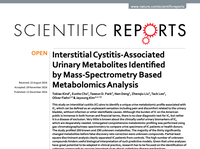
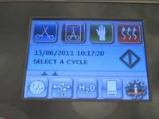

diagnosis_and_treatment_ic-bps 2011
Share on Social Networks
Share Link
Use permanent link to share in social mediaShare with a friend
Please login to send this document by email!
Embed in your website
42. American Urological Association Interstitial Cystitis 42 Process The Interstitial Cystitis Panel was created in 2008 by the American Urological Association Education and Research, Inc. (AUA). The Prac- tice Guidelines Committee (PGC) of the AUA selected the Panel Chair and Panel Facilitator, who in turn appointed the additional Panel Members with specific expertise in this disease. The AUA conducted a thorough peer re- view process. The draft Guideline document was distributed to 84 peer reviewers. The panel reviewed and discussed all submitted comments and revised the draft as needed. Once finalized, the guideline was submitted for approval to the Practice Guidelines Committee of the AUA. Then it was submitted to the AUA Board of Directors for final approval. Funding of the Panel and of the PGC was pro- vided by the AUA, although Panel members re- ceived no remuneration for their work. Author Affiliations Philip M. Hanno, MD, Panel Chair Division of Urology Hospital of the University of Pennsylvania Phladelphia, PA, USA David Allen Burks, MD, Panel Facilitator Michigan Institute of Urology St. Clair Shores, MI, USA J. Quentin Clemens, MD, MSCI Associate Professor of Urology University of Michigan Medical Center Ann Arbor, MI, USA Roger R. Dmochowski, MD Department of Urologic Surgery Vanderbilt University Nashville, TN, USA Deborah Erickson, MD University of Kentucky Lexington, KY, USA Mary Pat FitzGerald, MD, FACOG, FACS Loyola University Medical Center Maywood, IL, USA John B. Forrest, MD, PGC Representative Urologic Specialists of OK, Inc. Tulsa, OK, USA Barbara Gordon, MBA, RD Interstitial Cystitis Association (ICA) Rockville, MD, USA Process and Affiliations
21. American Urological Association Interstitial Cystitis 21 tant component of quality of life and, particu- larly for complex patient presentations, may require a multidisciplinary approach. Please see Statement 14 on pain management for a thorough discussion of pain management. Guideline Statement 9. The IC/BPS diagnosis should be reconsid- ered if no improvement occurs after multi- ple treatment approaches. Clinical Princi- ple Discussion. If clinically - meaningful trials of multiple therapies have been conducted with- out efficacy, then the clinician should revisit the diagnosis of IC/BPS and consider whether an unidentified disorder may be present that is producing symptoms. This consideration may require additional diagnostic workup and/or re- ferral to appropriate specialists. Treatment Levels for IC/BPS. The Panel as- sessed the available data for each treatment to determine whether a specific intervention dem- onstrated sufficient efficacy to be included as a treatment alternative. The types of studies available (randomized trials, observational studies), quality of individual studies, consis- tency of outcome across studies, and gener- alizability of samples, settings, and interven- tions were examined and overall evidence strength determined. The quality of individual studies is conceptually distinct from the cate- gorization of overall evidence strength. For ex- ample, individual studies may be of high qual- ity but if findings are contradictory or samples do not generalize well to the patient population addressed by the guideline, then evidence strength may be downgraded. The balance between benefits and risks/ burdens (i.e., adverse events) was considered. The Panel conceptualized risks/burdens in terms of the invasiveness of the treatment, the duration and severity of potential adverse events, and the reversibility of potential ad- verse events. With regard to treatment inva- siveness, oral treatments were judged to be less invasive than intravesical treatments and intravesical treatments were judged to be less invasive than surgical treatments. With regard to duration of adverse events, some adverse events either diminish over time and/or readily cease upon cessation of the treatment (e.g., medication side effects). Some adverse events, however, can persist for long periods after the treatment has been discontinued (e.g., the need for intermittent self - catheterization in some patients several months after intradetru- sor BTX - A treatment). With regard to the se- verity of adverse events, potential adverse events vary in the extent to which they can compromise QoL. For example, medication side effects can be mild (e.g., pentosan polysulfate) or severe enough to constitute the major rea- son for study withdrawal (e.g., amitriptyline). Further, some procedures and substances have the potential for rare but life - threatening ad- verse events (e.g., sepsis with intravesical BCG administration). Adverse events also vary in their reversibility. Most medication side effects cease upon discontinuation of the substance and are completely reversible. Surgical treat- ments, however, are irreversible. Treatment alternatives were then cate- gorized as clinical principles, expert opinion or Guideline Statement 9
45. American Urological Association Interstitial Cystitis 45 Disclaimer This document was written by the Interstitial Cystitis Guidelines Panel of the American Urological Association Education and Research, Inc., which was created in 2008. The Practice Guidelines Committee (PGC) of the AUA se- lected the committee chair. Panel members were selected by the chair. Membership of the committee included urologists, nurses, and other clinicians with specific expertise on this disorder. The mission of the committee was to develop recommendations that are analysis - based or consensus - based, depending on Panel processes and available data, for optimal clini- cal practices in the diagnosis and treatment of interstitial cystitis. Funding of the committee was provided by the AUA. Committee members received no remuneration for their work. Each member of the committee provided a conflict of interest disclosure to the AUA. AUA guidelines provide guidance only, and do not establish a fixed set of rules or de- fine the legal standard of care. As medical knowledge expands and technology advances, the guidelines will change. Today these evi- dence - based guidelines statements represent not absolute mandates but provisional propos- als for treatment under the specific conditions described in each document. For all these rea- sons, the guidelines do not pre - empt physician judgment in individual cases. Also, treating physicians must take into account variations in resources, and in patient tolerances, needs, and preferences. Conformance with AUA guide- lines cannot guarantee a successful outcome. The text may include information or recommendations about certain drug uses ( ̳off label‘) that are not approved by the Food and Drug Administration (FDA), or about medications or substances not subject to the FDA approval process. AUA urges strict com- pliance with all government regulations and protocols for prescription and use of these substances. The physician is encouraged to carefully follow all available prescribing infor- mation about indications, contraindications, precautions and warnings. These guidelines and best practice statements are not in- tended to provide legal advice about use and misuse of these substances. Disclaimer
4. American Urological Association Interstitial Cystitis 4 INTRODUCTION Purpose Purpose This guideline‘s purpose is to provide direction to clinicians and patients regarding how to: recognize interstitial cystitis (IC)/bladder pain syndrome (BPS); conduct a valid diagnostic process; and, approach treatment with the goals of maximizing symptom control and pa- tient quality of life (QoL) while minimizing ad- verse events and patient burden. The strate- gies and approaches recommended in this document were derived from evidence - based and consensus - based processes. IC/BPS no- menclature is a controversial issue; for the purpose of clarity, the Panel decided to refer to the syndrome as IC/BPS and to consider these terms synonymous. There is a continually ex- panding literature on IC/BPS; the Panel notes that this document constitutes a clinical strat- egy and is not intended to be interpreted rig- idly. The most effective approach for a particu- lar patient is best determined by the individual clinician and patient. As the science relevant to IC/BPS evolves and improves, the strategies presented here will require amendment to re- main consistent with the highest standards of clinical care. Methodology A systematic review was conducted to iden- tify published articles relevant to the diagno- sis and treatment of IC/BPS. Literature searches were performed on English - language publications using the MEDLINE da- tabase from January 1, 1983 to July 22, 2009 using the terms ―interstitial cystitis,‖ ―painful bladder syndrome,‖ ―bladder pain syndrome,‖ and ―pelvic pain‖ as well as key words cap- turing the various diagnostic procedures and treatments known to be used for these syn- dromes. Studies published after July 22, 2009 were not included as part of the evi- dence base considered by the Panel from which evidence - based guideline statements (Standards, Recommendations, Options) were derived. A few studies published after this cut - off date provided relevant informa- tion and are cited in the text as background material. Data from studies published after the literature search cut - off will be incorpo- rated into the next version of this guideline. Preclinical studies (e.g., animal models), pe- diatric studies, commentary and editorials were eliminated. Review article references were checked to ensure inclusion of all possi- bly relevant studies. Studies using treat- ments not available in the United States, herbal or supplement treatments, or studies that reported outcomes information collapsed across multiple interventions also were ex- cluded. Studies on mixed patient groups (i.e., some patients did not have IC/BPS) were re- tained as long as more than 50% of patients were IC/BPS patients. Multiple reports on the same patient group were carefully examined
23. American Urological Association Interstitial Cystitis 23 should be offered these treatments. As with other sections of the guideline, this information is presented as a suggested framework for the clinical approach; it is not intended to replace the judgments of individual clinicians and pa- tients regarding the optimal components of treatment. Guideline Statement 10. Patients should be educated about normal bladder function, what is known and not known about IC/BPS, the benefits vs. risks/burdens of the available treatment alternatives, the fact that no single treat- ment has been found effective for the ma- jority of patients, and the fact that accept- able symptom control may require trials of multiple therapeutic options (including combination therapy) before it is achieved. Clinical Principle Discussion. The first - line treatment approach should include patient education regarding nor- mal bladder function and what is known and not known about IC/BPS and the fact that it is typically a chronic disorder requiring continual and dynamic management. Patients also should be educated regarding the available treatment alternatives, the fact that no single treatment has been found to be effective for a majority of patients, and that adequate symp- tom control is achievable but may require trials of multiple therapeutic options to identify the regimen that is effective for that patient. Pa- tients should be counseled that identifying an effective pain relief regimen may require multi- ple trials of different medications in order to identify the medication(s) that produce opti- mal effects for that particular patient. Fur- ther, patients should be informed that, given the chronic nature of IC/BPS, the typical course involves symptom exacerbations and remissions. Guideline Statement 11. Self - care practices and behavioral modi- fications that can improve symptoms should be discussed and implemented as feasible. Clinical Principle Discussion. Clinical experience and a limited literature suggest that modifying certain be- haviors can improve symptoms in some IC/ BPS patients. 90 Suggesting that patients be- come aware of and avoid specific behaviors which, reproducibly for a particular patient, worsen symptoms, is appropriate and can provide some sense of control in a disease process which can be a devastating ordeal. Behavioral modification strategies may in- clude: altering the concentration and/or vol- ume of urine, either by fluid restriction or ad- ditional hydration; application of local heat or cold over the bladder or perineum; avoidance of certain foods known to be common bladder irritants for IC/BPS patients such as coffee or citrus products; use of an elimination diet to determine which foods or fluids may contrib- ute to symptoms; over - the - counter products (e.g., neutraceuticals, calcium glycerophos- phates, pyridium); techniques applied to trig- ger points and areas of hypersensitivity (e.g., application of heat or cold); strategies to manage IC/BPS flare - ups (e.g. meditation, Guideline Statement 10 — 11
39. American Urological Association Interstitial Cystitis 39 Benefits) . Systemic long - term glucocorticoid administration should not be offered as the pri- mary treatment for IC/BPS symptoms. This Recommendation is based on the findings from two observational studies. 179, 180 Although high rates of efficacy were reported (47 to 64%), given the extremely small combined sample size of fewer than 30 patients, the relatively serious adverse events (e.g., new diabetes on- set, exacerbation of existing diabetes, pneu- monia with septic shock, increased blood pres- sure), and the known risks of systemic long - term glucorticoid use, risks/burdens clearly outweigh benefits and the Panel recommends that this therapy not be used long - term. This Recommendation does not preclude the use of short - term glucocorticoid therapy to manage symptom flares. Future Research Patients with IC/BPS constitute a previously under - recognized and underserved popula- tion in need of adequate medical manage- ment. Over the past 20 years, there have been significant efforts directed at under- standing the etiology and the therapeutic challenges of this disease. These efforts were spearheaded by U.S. patient support groups that have urged the National Institutes of Health to fund research studies to better un- derstand IC/BPS pathophysiology and to fund clinical studies to identify valid treatment ap- proaches. Treating IC/BPS patients presents a significant challenge in clinical practice. Treatment approaches may be local (directed to the bladder) or systemic, range from be- havioral to pharmacological, and may include many types of adjunctive therapy approaches intended to optimize quality of life. Although there are evidenced - based data supporting certain treatment approaches for patients in clinical studies, the unsolved question in clini- cal practice remains: ―Who is the ideal pa- tient for a given treatment approach?‖ Thus, treatment of IC/BPS often requires a trial and error approach. IC/BPS, which was originally consid- ered to be a bladder disease, has now been recognized as a chronic pain syndrome. 26, 179 - 181 There is a growing body of literature dem- onstrating that different visceral pain syn- dromes, as well as pain syndromes in other body regions, and other systemic diseases often occur together in the same patient. Thus, efforts to understand the pathophysiol- Future Research
41. American Urological Association Interstitial Cystitis 41 it is not clear, if studies evaluating the re- sponse to an evoked visceral stimulus can be used to predict the response to spontaneous visceral pain, since the neurophysiological mechanisms are likely to be different. In the past questionnaires have been used to assess a global response or individual symptoms re- lated to IC/BPS. However, as the definition of IC/BPS appears to be expanding from a blad- der disease to a chronic pain syndrome, reli- able new outcome measures will have to be developed. Again, a biomarker would be an ideal outcome measure, if it would measure the presence of IC/BPS and changes in the bio- marker would reflect a response to treatment. Many IC/BPS patients suffer from other chronic pain conditions as well. Outcome measures in clinical trials will have to track these comorbid- ities, so that different subgroups of IC/BPS pa- tients can be identified and responders versus non - responders categorized appropriately. IC has only been recognized as a highly prevalent health problem in the past 20 years. Data regarding disease progression, remission, and prevention are very limited and we know very little about risk factors for development of associated symptoms over time. Patients are currently treated with a variety of different medications and other treatment interventions on an empirical basis by different clinicians. There is an urgent need for a long - term regis- try for these patients following them over sev- eral decades prospectively. Such a registry will provide information about the natural course of the disease and information about treatment interventions found to be effective could pro- vide a basis for future clinical trials. 186 Although progress in developing specific IC/BPS treatments has been slow, these are exciting times for the development of new treatment targets. 187 Modulation of visceral nociceptive pathways can occur at peripheral, spinal and supra - spinal sites and a wide vari- ety of potential drug targets exists. Com- pounds that hit several targets might be the best option for a successful approach in the short term, carefully evaluating the benefits of each sequentially. However, there is emerging evidence that a more refined ap- proach may be achievable. 188 In addition, re- search is needed on antiproliferative factors (APF) as a possible therapeutic pathway for treatment of IC/BPS. APF is a frizzled 8 pro- tein secreted by the bladder epithelial cells of patients with IC/BPS. It inhibits uroepithelial cell proliferation by decreasing heparin bind- ing epidermal growth factor - like growth fac- tor (HB - EGF). 189 APF has been shown to be a sensitive and specific biomarker for IC/BPS vs. controls. 189 It has been speculated that APF suppression of uroepithelial cell prolifera- tion after bladder injury may result in clinical IC/BPS, and inhibition of APF may be an ef- fective treatment or prevention 190 , but fur- ther research is needed. Future Research
22. American Urological Association Interstitial Cystitis 22 evidence - based statements and divided into first - , second - , third - , fourth - , fifth - , and sixth - line groups. This hierarchy was derived by bal- ancing the potential benefits to the patient with the invasiveness of the treatment, the duration and severity of potential adverse events, and the reversibility of potential adverse events. Note that the hierarchy was not established based on evidence strength. For example, first - line treatments (composed of Clinical Princi- ples) in the Panel‘s judgment present essen- tially no risks to patients and should be offered to all patients. Second - line treatments vary in evidence strength but have in common that they appear to benefit at least a subset of pa- tients, pose the least risk to patients in terms of invasiveness and adverse event duration/ severity, and are readily reversible. For treat- ments with a sufficient evidence base, judg- ments regarding evidence strength and the balance between benefits and risks/burdens then were used to determine statement type (Standard, Recommendation or Option). Each set of treatments is presented be- low. Most treatments are designated as Op- tions with the exception of fulguration of Hun- ner‘s lesions (this treatment is designated as a Recommendation). In most cases, the designa- tion of Option reflects the Panel‘s judgment that uncertainty existed for the balance be- tween benefits and risks/burdens for a particu- lar treatment. One source of uncertainty was the Panel‘s observation that most treatments may benefit a subset of patients that is not readily identifiable pre - treatment and but that no treatment reliably benefits most or all pa- tients. Therefore, on average and for a particu- lar patient, uncertainty exists for most treat- ments regarding the balance between bene- fits and risks/burdens. Uncertainty also is present when the available studies appear to demonstrate efficacy but the total number of patients exposed to a particular treatment is small (e.g., cimetidine studies). In this cir- cumstance the Panel judged that the small sample size constituted an additional source of uncertainty. For one treatment designated an Option (oral pentosan polysulfate), several randomized trials were available. In this case, the available evidence resulted in the judg- ment of relative certainty that the balance between benefits and risks/burdens was ap- proximately equal because the trials were contradictory and that treatment is most ap- propriately designated as an Option. Given the lack of understanding re- garding pathophysiological causal factors in IC/BPS and the consequence that treatment goals are to control symptoms to optimize quality of life, the Panel judged that the most appropriate course was to preserve treat- ments as clinical choices as long as some effi- cacy for some patients was demonstrated and the risk of serious harms was low. In contrast, fulguration of Hunner‘s lesions was designated a Recommendation (based Grade C evidence) because little to no uncertainty existed regarding the fact that benefits (large and sustained treatment effects) clearly out- weighed risks/burdens. First - Line Treatments: The first - line treat- ment approaches presented below are based on Clinical Principles; insufficient literature was available to guide an evidence - based version. The Panel believes that all patients Guideline Statement 9
26. American Urological Association Interstitial Cystitis 26 chronic pain syndrome, little is known about effective pharmacological treatment for chronic pain in these patients. 21, 104, 105 The Panel‘s clinical experience reflected diverse approaches to effective pain management, ranging from primary management by the practicing urolo- gist to use of a multidisciplinary team incorpo- rating an anesthesia/pain specialist. The deci- sion regarding how to approach this issue de- pends on the judgment and experience of the involved clinician(s), the severity of the pa- tient‘s symptoms, and the availability of exper- tise and resources. Given the current state of knowledge, pharmacological pain management principles for IC/BPS should be similar to those for man- agement of other chronic pain states. Cur- rently, there is no method to predict which drug is most likely to alleviate pain in a given IC/BPS patient. Clinicians and patients should be aware that a multimodal approach in which pharmacologic agents are combined with other therapies is likely to be the most effective. In addition, effective treatment of symptom flares may require a pain treatment protocol with some flexibility to manage flare - related break- through pain. The goal of pharmacotherapy is to find medication/medications that provide significant pain relief with minimal side effects. Pain man- agement tools include urinary analgesics, NSAIDs, narcotics and a wide variety of non- narcotic medications used for chronic pain which have been ―borrowed‖ from the treat- ment of depression, epilepsy, arrhythmias, etc. The use of narcotics presents the risks of toler- ance and dependence (although very rarely ad- diction) but it is clear that many patients bene- fit from narcotic analgesia as part of a com- prehensive program to manage pain. Some of the essential principles of pain manage- ment include: 1. The rights and responsibilities of the patient and clinician should be clearly stated at the outset; this may take the form of a pain management ―contract‖. 2. All narcotic prescriptions must come from a single source. 3. Increasing doses of medication should be tied to improving function in activi- ties of daily living (e.g., work, parent- ing, sexual intimacy, ability to exer- cise) rather than to just relief of pain. The patient and clinician should set mutual goals in these areas. 4. Patients who require continuous nar- cotic therapy should be primarily man- aged with long - acting narcotics. Small doses of short acting narcotics can be used for ―breakthrough‖ pain. 5. Multimodality therapy may help to minimize narcotic use and the risk of tolerance. Narcotic medications should be used in combination with one of the non - narcotic drugs. 6. Complementary therapy (e.g., physical therapy, counseling/pain psychology, stress management), should be con- sidered as they may minimize the de- pendence on pain medications. It is important that the patient under- stand that finding the medication or combina- tion of medications that provide effective pain control requires a ̳trial and error‘ method of prescribing. The efficacy of each analgesic Guideline Statement 14
27. American Urological Association Interstitial Cystitis 27 administered should be determined and only one drug should be titrated at a time; other- wise it is not possible to assess the effects of a certain drug on pain scores. The starting dose should always be the smallest available and titration should occur at frequent intervals, guided by pain scores and side effects. This re- quires frequent contact between the patient and the clinician. It is important for the patient and the prescribing clinician to understand that some side effects actually improve as the pa- tient continues to take the drug for several weeks. If these side effects are not intolerable, then the patient should be guided through this pe- riod. Using these general guidelines of pain management, a pain medication or combina- tion of pain medications can often be identified that significantly relieve pain in IC/BPS pa- tients. Patients and clinicians should be aware that 100% pain relief is often not achievable; the focus of pain management is to minimize discomfort and maximize the patient‘s ability to function in daily life. Whether pain management is best ac- complished by the primary treating clinician and/or by a multidisciplinary team or other pain specialists should be determined by the individual clinician in consultation with the pa- tient. Patients with intractable pain and/or complex presentations may require referral to other specialists to achieve satisfactory pain control. It is important to note that pain man- agement alone does not constitute sufficient treatment for IC/BPS; pain management is one component of treatment. To the extent possi- ble, it is essential that patients also are treated for the underlying bladder - related symptoms. Guideline Statement 15. Amitriptyline, cimetidine, hydroxyzine, or pentosan polysulfate may be adminis- tered as second - line oral medications (listed in alphabetical order; no hierar- chy is implied). Options Discussion. Amitriptyline (Evidence Strength – Grade B; Balance between benefits & risks/burdens uncertain). One randomized controlled trial reported efficacy of oral amitriptyline (25 mg daily titrated over several weeks to 100 mg daily if toler- ated) to be superior to placebo (63% of treatment group clinically significantly im- proved compared to 4% of placebo group) at four months. 106 Two observational studies re- ported similar findings of 50% to 64% of pa- tients experiencing clinically significant im- provement using a similar dosing regimen at up to 19 months of follow - up. 107, 108 Adverse events were extremely common (up to 79% of patients) and, although not life - threatening, had substantial potential to com- promise quality of life (e.g., sedation, drowsi- ness, nausea). Medication side effects were the major reason for withdrawal from the studies. The available data suggest that be- ginning at low doses (e.g., 25 mg) and titrat- ing gradually to 75 - 100 mg if tolerated is an acceptable dosing regimen. Given that amitriptyline appears to benefit a subset of patients in the setting of a high likelihood for adverse events that compromise quality of life, it was designated as an Option. Guideline Statement 15
57. American Urological Association Interstitial Cystitis 57 Eur J Pain 1999; 3 : 189. 184. Gillenwater JY, Wein AJ: Summary of the National Institute of Arthritis, Diabetes, Digestive and Kidney Diseases Workshop on Interstitial Cystitis, National Insti- tutes of Health, Bethesda, Maryland, Au- gust 28 - 29, 1987. J Urol 1988; 140 : 203. 185. Fan YH, Lin ATL, Wu HM et al: Psycho- logical profile of Taiwanese interstitial cystitis patients. Int J Urol 2008; 15 : 416. 186. van de Merwe JP: Interstitial cystitis and systemic autoimmune diseases. Nat Clin Pract Urol 2007; 4 : 484. 187. Ness TJ, Richter HE, Varner RE et al: A psychophysical study of discomfort pro- duced by repeated filling of the urinary bladder. Pain 1998; 76 : 61. 188. NURA: National Urology Research Agenda: American Urological Assocation Foundation, 2010 189. Wesselmann U, Baranowski AP, Börjes- son M et al: Emerging therapies and novel approaches to visceral pain. In: Drug Discovery Today: Therapeutic Strategies, vol. In Press, Corrected Proof, 2009 190. Hobson AR, Aziz Q: Modulation of vis- ceral nociceptive pathways. Current Opinion in Pharmacology 2007; 7 : 593. 191. Keay S, Kleinberg M, Zhang CO et al: Bladder epithelial cells from patients with interstitial cystitis produce an in- hibitor of heparin - binding epidermal growth factor - like growth factor produc- tion. J Urol 2000; 164 : 2112. 192. Keay S: Cell signaling in interstitial cysti- tis/painful bladder syndrome. Cell Sig- nal 2008; 20 : 2174.
17. American Urological Association Interstitial Cystitis 17 When cystoscopy is performed with hy- drodistension under anesthesia, interpreting findings relevant to an IC/BPS diagnosis be- comes even more complicated. Hydrodisten- sion methods vary widely. Duration, pressure, and number of hydrodistension episodes per session vary greatly in clinical practice on sur- vey analysis. 80 Given the differing approaches, the finding of glomerulations on hydrodisten- tion is variable and not consistent with clinical presentation. 81, 82 For the same reasons, the absence of glomerulations can lead to false negative assessment of patients who present with clinical findings consistent with IC/BPS. 83 In addition, glomerulations may be seen in pa- tients who have undergone radiation therapy, in the presence of active bladder carcinoma, associated with chemotherapeutic or toxic drug exposure, and in patients with defunctionalized bladders. Therefore, hydrodistension is not necessary for routine clinical use to establish a diagnosis of IC/BPS diagnosis. If hydrodisten- sion is performed to determine whether Hun- ner‘s lesions are present or as a treatment, then the technique should be specified and the bladder capacity determined. It is useful for the clinician and patient to understand when bladder capacity is severely reduced (a low ca- pacity due to fibrosis). 84 Similar to cystoscopy, there are no agreed - upon urodynamic criteria diagnostic for IC/BPS. There can be significant discomfort as- sociated with the testing methodology and findings in IC/BPS patients are inconsistent. Bladder sensations reported during cystometric bladder filling may be normal or markedly ab- normal, possibly due to the subjective nature of bladder sensory function. 85 Pain with filling (hypersensitivity) is consistent with IC/BPS. Most patients will have normal filling pressure and compliance. Detrusor overactivity (DO) is seen in approximately 12 - 20% of IC/BPS pa- tients. 85 In these cases, it can be difficult to determine whether the diagnosis is DO alone or IC/BPS in combination with DO. Patients with DO alone may report discomfort during cystometric bladder filling and may be non - responsive to antimuscarinic drugs. However, if the patient also meets the clinical definition criteria for IC/BPS, then it is reasonable to di- agnose both conditions. Pelvic floor muscle dysfunction may manifest as high resting ure- thral pressure, functional bladder outlet ob- struction due to poor relaxation of the sphinc- ter associated with pain - induced pelvic floor muscle dysfunction, and poor contractility due to bladder inhibition from non - relaxing pelvic floor muscles. 86 Therefore, urodynamic evalua- tion may provide information regarding con- comitant voiding dysfunction. Specific indica- tions that urodynamic evaluation may be use- ful include suspicion of outlet obstruction in ei- ther sex, possibility of poor detrusor contractil- ity, and other conditions that could explain why patients are initially refractory to first - line therapy. In general, however, urodynamics are not recommended for routine clinical use to es- tablish an IC/BPS diagnosis. Guideline Statement 3
20. American Urological Association Interstitial Cystitis 20 Guideline Statement 5. Initial treatment type and level should de- pend on symptom severity, clinician judg- ment, and patient preferences; appropri- ate entry points into the treatment por- tion of the algorithm depend on these fac- tors. Counseling patients with regard to reasonable expectations for treatment outcomes is important. Clinical Principle Discussion. Effective management of IC/BPS patients requires tailoring of treatments to symptom type and severity as well as ensuring that patients have reasonable expectations for treatment benefits. Please see the Treatment section and patient education section (Statement 10) for more discussion of these issues. Guideline Statement 6. Multiple, concurrent treatments may be considered if it is in the best interests of the patient; baseline symptom assess- ment and regular symptom level re - assessment are essential to document ef- ficacy of single and combined treatments. Clinical Principle Discussion. Some patients may benefit from the use of concurrent treatments or may re- quire the use of concurrent treatments to opti- mize quality of life. Documenting treatment progress achieved with single and multiple treatment approaches is critical to ensure that ineffective treatments are ceased (see discus- sion under Statement 7) and that only effec- tive treatments (alone and/or in combination) are continued. Please see the Treatment sec- tion for details on available treatments. Guideline Statement 7. Ineffective treatments should be stopped once a clinically - meaningful interval has elapsed. Clinical Principle Discussion. IC/BPS treatment alternatives are characterized by the fact that most treatments may benefit a subset of patients that is not identifiable pre - treatment but that no treat- ment reliably benefits most or all patients. It is not uncommon, therefore, for a particular pa- tient to experience lack of benefit from a par- ticular treatment. For this reason, if a clinically - meaningful trial of a therapy has been con- ducted without efficacy, then the therapy should be discontinued and other therapeutic alternatives considered. See Treatment section for details. Guideline Statement 8. Pain management should be continually assessed for effectiveness because of its importance to quality of life. If pain man- agement is inadequate, then considera- tion should be given to a multidisciplinary approach and the patient referred appro- priately. Clinical Principle Discussion. Because the underlying patho- physiology of IC/BPS is unknown, treatment goals are to manage symptoms and optimize QoL. Effective pain management is an impor- Guideline Statements 5 — 8
5. American Urological Association Interstitial Cystitis 5 Methodology to ensure inclusion of only nonredundant infor- mation. In a few cases, individual studies con- stituted the only report on a particular treat- ment. Because sample sizes in individual stud- ies were small, single studies were not consid- ered a sufficient and reliable evidence base from which to construct an evidence - based statement (i.e., a Standard, Recommendation, or Option). These studies were used to support Clinical Principles as appropriate. IC/BPS Diagnosis and Overall Manage- ment. The review revealed insufficient publi- cations to address IC/BPS diagnosis and overall management from an evidence basis; the diag- nosis and management portions of the algo- rithm (see Figure 1), therefore, are provided as Clinical Principles or as Expert Opinion with consensus achieved using a modified Delphi technique if differences of opinion emerged. 1 A Clinical Principle is a statement about a compo- nent of clinical care that is widely agreed upon by urologists or other clinicians for which there may or may not be evidence in the medical lit- erature. Expert Opinion refers to a statement, achieved by consensus of the Panel, that is based on members' clinical training, experi- ence, knowledge, and judgment for which there is no evidence. IC/BPS Treatment. With regard to treat- ment, a total of 86 articles met the inclusion criteria; the Panel judged that these were a sufficient evidence base from which to con- struct the majority of the treatment portion of the algorithm. Data on study type (e.g., ran- domized controlled trial, randomized crossover trial, observational study), treatment parame- ters (e.g., dose, administration protocols, fol- low - up durations), patient characteristics (i.e., age, gender, symptom duration), ad- verse events, and primary outcomes (as de- fined by study authors) were extracted. The primary outcome measure for most studies was some form of patient - rated improvement scale. For studies that did not use this type of measure, other outcomes were extracted [e.g., interstitial cystitis Symptom Index (ICSI), interstitial cystitis problem index (ICPI), visual analog scales (VAS)]. Quality of Individual Studies and Deter- mination of Evidence Strength . Quality of individual studies that were randomized con- trolled trials (RCTs) or crossover trials was assessed using the Cochrane Risk of Bias tool. 2 Because placebo effects are common in controlled trials conducted with IC/BPS pa- tients, any apparent procedural deviations that could compromise the integrity of ran- domization or blinding resulted in a rating of increased risk of bias for that particular trial. Because there is no widely agreed upon qual- ity assessment tool for observational studies, the quality of individual observational studies was not assessed. The categorization of evidence strength is conceptually distinct from the quality of individual studies. Evidence strength refers to the body of evidence avail- able for a particular question and includes consideration of study design, individual study quality, the consistency of findings across studies, the adequacy of sample sizes, and the generalizability of samples, settings, and treatments for the purposes of the guide-
14. Guideline Statement 1. The basic assessment should include a careful history, physical examination and laboratory examination to document symptoms and signs that characterize IC/ BPS and exclude other disorders that could be the cause of the patient’s symp- toms. Clinical Principle Discussion. The clinical diagnosis of IC/BPS requires a careful history, physical examination and laboratory examination to document basic symptoms that characterize the disorder and exclude infections and other disorders (see Fig- ure 1: Diagnostic and Treatment Algorithm). 62 - 65 The clinical history should include questions about symptom duration. IC is a chronic disor- der and symptoms should be present for at least six weeks with documented negative urine cultures for infection. The number of voids per day, sensation of constant urge to void, and the location, character and severity of pain, pressure or discomfort should be docu- mented. Dyspareunia, dysuria, ejaculatory pain in men and the relationship of pain to men- struation in women should also be noted. The physical examination should include an abdominal and pelvic examination noting masses, tenderness, and presence of hernias. The pelvic examination should include palpa- tion of the external genitalia, bladder base in females and urethra in both sexes focusing on areas of tenderness. The pelvic floor muscles in both sexes should be palpated for locations of tenderness and trigger points. The pelvic support for the bladder, urethra, vagina, and rectum should be documented. A focused evaluation to rule out vaginitis, urethritis, ten- der prostate, urethral diverticulum or other po- tential source of pain or infection is important. For a more detailed discussion, please see Weiss 2001. 66 A trial of antibiotic therapy is appropriate when infection is suspected; if symptoms resolve one might consider a course of antibiotic suppression to allow for full recov- ery. A brief neurological exam to rule out an occult neurologic problem and an evaluation for incomplete bladder emptying to rule out occult retention should be done on all patients. The basic laboratory examination in- cludes a urinalysis and urine culture. If the pa- tient reports a history of smoking and/or pre- sents with unevaluated microhematuria, then cytology may be considered given the high risk of bladder cancer in smokers. Urine culture may be indicated even in patients with a nega- tive urinalysis in order to detect lower levels of bacteria that are clinically significant but not readily identifiable with a dipstick or on micro- scopic exam. Guideline Statement 2. Baseline voiding symptoms and pain lev- els should be obtained in order to meas- ure subsequent treatment effects. Clinical Principle Discussion. It is important to establish base- line values in order to evaluate later treatment responses. Very low voiding frequencies or high voided volumes should prompt a diligent search for an alternate diagnosis. At least a one - day voiding log should be used to estab- lish the presence of a low volume frequency voiding pattern that is characteristic of IC/ American Urological Association Interstitial Cystitis 14 Guideline Statement 1 — 2 GUIDELINE STATEMENTS
18. American Urological Association Interstitial Cystitis 18 Treatment Statements Issues to Consider. The published literature regarding the typical course of IC/BPS is con- flicting. Some studies suggest that IC/BPS is a chronic condition with a waxing and waning course with, on average, little improvement over time while other studies suggest that most patients seem to improve over time. 87 - 89 Conflicting information is not surprising given that studies have been conducted on different patient populations and have had different pur- poses (e.g., documenting disease course vs. treating the disease in the context of a con- trolled trial). It is clear, however, that there is a limited understanding of IC/BPS pathophysi- ology and that most treatments are targeted at symptom control. In addition, treatment stud- ies suggest that no single treatment works well over time for a majority of patients. Until more definitively effective therapies are identified, the treatment approach should be tailored to the specific symptoms of each patient in order to optimize quality of life. To optimally treat patients with a more complex presentation and/or when standard treatment approaches are ineffective, urologists may need to partner with other clinicians such as primary care pro- viders, nurse practitioners, registered dieti- tians, physical therapists, pain specialists, gas- troenterologists, and/or gynecologists. Overall Management . The information pre- sented on Overall Management of IC/BPS in this section is based on Clinical Principles or Expert Opinion with consensus achieved using a modified Delphi technique. This section is of- fered to provide clinicians and patients with a framework and strategy for determining opti- mal treatment approaches (see Figure 1); it is not intended to replace the judgment and experience of the individual clinician faced with a particular patient. The framework for overall management includes the following: Guideline Statement 4. Treatment strategies should proceed us- ing more conservative therapies first with less conservative therapies em- ployed if symptom control is inadequate for acceptable quality of life; because of their irreversibility, surgical treatments (other than fulguration of Hunner’s le- sions) are generally appropriate only af- ter other treatment alternatives have been exhausted or at any time in the rare instance when an end - stage small, fibrotic bladder has been confirmed and the patient’s quality of life suggests a positive risk - benefit ratio for major sur- gery. Clinical Principle Discussion. The available treatments for IC/BPS vary considerably in: invasiveness; the probability, duration, severity and re- versibility of adverse events; and reversibility of the treatment itself. Treatment strategies should proceed from conservative therapies to less conservative therapies. Please see the Treatment section for detailed discussion of this principle. Guideline Statement 4
6. American Urological Association Interstitial Cystitis 6 Methodology line. The AUA categorizes body of evidence strength as Grade A (well - conducted RCTs or exceptionally strong observational studies), Grade B (RCTs with some weaknesses of pro- cedure or generalizability or generally strong observational studies), or Grade C (observational studies that are inconsistent, have small sample sizes, or have other prob- lems that potentially confound interpretation of data). Because treatment data for this condi- tion are difficult to interpret in the absence of a placebo control, bodies of evidence comprised entirely of studies that lacked placebo control groups (i.e., observational studies) were as- signed a strength rating of Grade C. AUA Nomenclature: Linking Statement Type to Evidence Strength. The AUA no- menclature system explicitly links statement type to body of evidence strength and the Panel‘s judgment regarding the balance be- tween benefits and risks/burdens. 3 Standards are directive statements that an action should (benefits outweigh risks/burdens) or should not (risks/burdens outweigh benefits) be un- dertaken based on Grade A or Grade B evi- dence. Recommendations are directive state- ments that an action should (benefits outweigh risks/burdens) or should not (risks/burdens outweigh benefits) be undertaken based on Grade C evidence. Options are non - directive statements that leave the decision to take an action up to the individual clinician and patient because the balance between benefits and risks/burdens appears relatively equal or ap- pears unclear; Options may be supported by Grade A, B, or C evidence. In the treatment portion of this guideline, most statements are Options because most treatments demon- strate limited efficacy in a subset of patients that is not readily identifiable a priori . The Panel interpreted these data to indicate that, for a particular patient, the balance between benefits and risks/burdens is uncertain or relatively equal and whether to use a particu- lar treatment is a decision best made by the clinician who knows the patient with full con- sideration of the patient‘s prior treatment his- tory, current quality of life, preferences and values. Limitations of the Literature. The Panel proceeded with full awareness of the limita- tions of the IC/BPS literature. These limita- tions include: poorly - defined patient groups or heterogeneous groups; small sample sizes; lack of placebo controls for many stud- ies, resulting in a likely over - estimation of efficacy; short follow - up durations; and, use of a variety of outcome measures. With re- gard to measures, even though the most consistently used measure was some form of patient - rated improvement scale, the scales differed across studies in anchor points, num- ber of gradations, and descriptors. Overall, these difficulties resulted in limited utility for meta - analytic procedures. The single meta - analysis reported here was used to calculate an overall effect size for data from random- ized trials that evaluated pentosan polysul- fate (PPS). No comparative procedures were undertaken.
15. American Urological Association Interstitial Cystitis 15 BPS. 67 These values can then be used to deter- mine if a clinically significant response to treat- ment has occurred. Similarly, self - report in- struments such as the O‘Leary - Sant Symptom and Problem questionnaire and the Pelvic Pain and Urgency/Frequency (PUF) questionnaire can be used to establish a standardized symp- tom profile baseline for later evaluation of treatment response. 27 These self - report instru- ments, however, are only useful to establish baseline symptom values – they are not valid tools for establishing a diagnosis. The isolated pain component also should be evaluated in patients who report pain or other descriptors of discomfort such as pres- sure. The goal of this evaluation is to gather information regarding pain/discomfort location (s), intensity, and characteristics, and to iden- tify factors that exacerbate or alleviate pain or discomfort. There are several ways in which to assess pain and discomfort. The O‘Leary - Sant ICSI/ICPI is useful to gather comprehensive symptom information, including symptoms in addition to those of pain or discomfort. 68 A one to 10 Likert - style visual analog scale (VAS) is a simple, easily - administered instrument that can capture pain intensity. Pain body maps can be used with patients whose presentation sug- gests a more global pain syndrome. Patients should be queried with regard to pain charac- teristics (e.g., burning, stabbing) or a pain ad- jective checklist can be offered (e.g, McGill Pain Questionnaire – Short Form). 69 Patients also should be queried regarding factors known to worsen or improve pain or discomfort. This information is an important compo- nent to establish a diagnosis of IC/BPS, pro- vides a baseline against which treatments can be evaluated, and is used to determine the ap- propriate level of entry into the treatment al- gorithm. Many patients present with pain symptoms suggesting involvement of multiple organ systems. In such cases a multidiscipli- nary team of gastroenterology, neurology, rheumatology, gynecology, pain clinic special- ists, and other disciplines should be consid- ered. Disorders such as bacterial cystitis, uri- nary calculi, vaginitis, and less common prob- lems like carcinoma in situ of the bladder and chronic bacterial prostatitis have significant symptom overlap and must be systematically excluded or identified and treated appropri- ately. The role of other tests can support the diagnosis but have poor specificity for IC/ BPS. 70 Clinicians should carefully weigh the po- tential risks and burdens of particular tests against the potential benefit to patients. For example, urodynamic evaluation can identify bladder outlet obstruction or detrusor overac- tivity. The finding of sensory urgency at low bladder volumes with or without detrusor over- activity is not specific for IC/BPS. In general, additional tests should be undertaken only if findings will alter the treat- ment approach. As described in Statement 1, a key goal of the evaluation is to identify and ex- clude other disorders that may be causing symptoms. In contrast to cystoscopy, urody- namics, and radiologic imaging, the potassium sensitivity test (PST) does not result in the diagnosis of other disorders. In fact, it is con- sistently positive in some alternate disorders, including bacterial cystitis and radiation cysti- tis. 71 If a patient has typical symptoms of IC/ BPS (e.g., frequent urination driven by pain Guideline Statement 2
40. American Urological Association Interstitial Cystitis 40 ogy and to design therapeutic modalities have recently shifted from an organ - based approach to a more global approach. 88 Reflecting this new paradigm, the NIDDK has funded the Mul- tidisciplinary Approach to the Study of Chronic Pelvic Pain (MAPP) Research Network (www.mappnetwork.org). The MAPP network is focused on a broader approach to the study of IC/BPS and CP/CPPS than previously under- taken. A wide range of scientific discovery pro- jects, moving beyond the previous traditional bladder - and prostate - focused efforts, are be- ing conducted at six Discovery Sites. Investiga- tions include the relationship between IC/BPS, CP/CPPS and other chronic pain conditions (fibromyalgia, chronic fatigue syndrome, and irritable bowel syndrome), innovative epidemi- ological studies, search for clinically important biomarkers, investigation of bacterial, viral and other infectious causative/exacerbating agents, novel brain imaging studies and animal studies to better understand the pathophysiology of these often disabling syndromes. As the definition of IC/BPS has ex- panded, clinical trial design for this condition is becoming more complex and challenging. Early clinical trials have enrolled participants based on NIDDK research criteria for IC. 182 However, this approach resulted in two - thirds of poten- tial subjects being excluded at the outset. 5, 28 Further, IC/BPS patients with co - morbidities have typically been excluded in clinical trials. 160 While there is a need in clinical research to en- roll a more homogeneous patient population, this approach raises concerns about the clinical relevance of such studies for the truly hetero- geneous IC/BPS population. Two strategies may be useful to move the field forward. First, entry criteria for these trials could be as broad as possible to both improve the ability to generalize the results and permit subgroup analysis. 160 Second, clinically - important sub- groups could be identified a priori and evalu- ated for treatment responses. In future trials it will be important to keep track of co - morbidities for clinical trial design, either for the purpose of post hoc subgroup analysis or a priori subgroup recruitment, since the neuro - pathophysiological mechanisms in IC/ BPS patients with different co - morbidities are likely to be different. 24, 31, 33, 183, 184 A key issue for future clinical trial de- sign will be to identify clinically relevant ob- jective criteria for patient enrollment, and this remains a challenge, which has delayed a more aggressive approach of the pharmaceu- tical industry to identifying new treatment avenues for this condition. A validated urine marker for IC/BPS would be a major advan- tage in this disorder since it would provide an objective criterion for participant enrollment and allow sub - classification of various sub - groups of BPS. The second major challenge in clinical trial design remains the selection of outcome measures. 160 Many patients have periods of flares and remission. In other patients, symp- toms become more severe and frequent over time. Thus it is difficult to establish a baseline for the symptoms over a longer observation period. It has been suggested by some inves- tigators to circumvent this problem by evalu- ating the response to an evoked painful vis- ceral stimulus, such as bladder distension, either in normal volunteers, or in subjects with visceral pain. 185 Conceptually, however, Future Research
44. American Urological Association Interstitial Cystitis 44 Lecturer/Consultant/Advisor: David A. Burks , Astellas Pharma(C), Glaxo - Smith - Klein Pharma(C), Bayer Corporation(C); Meeting Participant or Lecturer: David Al- len Burks , Astellas Pharma, US(C), Bayer HealthCare Corporation(C), Glaxo - Smith - Klein Pharma, US(C); Mary P FitzGerald , Ferring, Inc.; Mikel L. Gray , Pfizer(C); Diane K. New- man , Allergan(C), Astellas(C), Glaxo - Smith - Klein Pharma(C), Watson Pharma(C), Pfizer (C); Researcher/ Scientific Study or Trial: Diane K. Newman , Allergan(C), GTX(C), Con- tura(C); Robert D. Mayer , Allergan(C), Pfizer (C); Speaker Honorarium: Mary P FitzGerald , Astellas(C), Ferring, Inc©; Other: Roger R. Dmochowski , Contura(C) AUA Staff: Guidelines Director Heddy Hubbard, PhD, FAAN Guidelines Systematic Review Manager - Cynthia Janus, MLS Guidelines Methodology Coordinator Marni Zuckerman, MA Guidelines Database Coordinator - Michael Folmer Guidelines Associate - Kadiatu Kebe Consultants to the AUA: Panel Manager - Suzanne Pope, MBA Methodologist - Martha Farraday, PhD Correspondence: American Urological Association Guidelines Department 1000 Corporate Blvd. Linthicum, Maryland, USA 21209 Phone: 410 - 689 - 3729 Fax: 410 - 689 - 3829 E - mail: [email protected] AUA Staff
30. American Urological Association Interstitial Cystitis 30 intravesical DSMO for IC/BPS patients. Given the potential for placebo effects to persist for long periods, only the data from the first phases were examined if reported (i.e., before the crossover). In the first study, blinded evaluators used urodynamic and voiding pa- rameters to rate patient improvement (―objective criteria‖) and patients rated global improvement (―subjective criteria‖). 119 The protocol was four treatments of 50 cc 50% DMSO instilled at two - week intervals with 15 minute retention; patients were evaluated at one month post - treatment. At the end of Phase 1, evaluators indicated that 93% of DMSO pa- tients and 35% of placebo patients were im- proved. Patient ratings of improvement were similar to evaluator ratings in the DMSO group (87%) and higher than evaluator ratings in the placebo group (59%). The second trial used six weekly instillations and reported that 47% of patients administered DMSO (retention interval not specified) reported improvement compared to 0% of a BCG (two hour retention) instillation group at three months. 120 There was no pla- cebo group in this study and data were not broken out between phases. Several observa- tional studies using similar formulations and instillation protocols ranging from weekly to monthly to PRN and follow - up intervals of a few months to several years reported efficacy rates of 25 to 90%. 121 - 123 Adverse event rates varied widely across studies, likely reflecting different author thresholds for what constituted an adverse event, but did not appear serious. Given the available data, particularly the wide range of efficacy rates reported, intravesical DMSO instillation was designated as an Option. If DMSO is used, then the panel suggests limit- ing instillation dwell time to 15 - 20 minutes; DMSO is rapidly absorbed into the bladder wall and longer periods of holding are associ- ated with significant pain. DMSO is often ad- ministered as a part of a ―cocktail‖ that may include heparin, sodium bicarbonate, a local steroid, and/or a lidocaine preparation. If a clinician chooses to administer a ―cocktail‖ preparation, then he or she should be aware that DMSO potentially enhances absorption of other substances, creating the possibility for toxicity from drugs such as lidocaine. No clinical studies have addressed the safety or increased efficacy of these preparations over DMSO alone. Discussion. Heparin (Evidence Strength – Grade C; Balance between benefits & risks/burdens uncertain). Three observa- tional studies reported findings from the use of intravesical heparin. Using 10,000 IU heparin in 10cm 3 sterile water three times a week for three months with retention of one hour, at three months 56% of patients re- ported clinically significant improvement. 124 A subset of responders continued the treat- ments for up to one year, resulting in 40% of patients overall reporting continued relief at the one year point. Using 25,000 IU in 5 ml distilled water twice a week for three months, at three months 72.5% of patients reported significant relief. 125 Efficacy also was reported when combining heparin with lidocaine (40,000 IU heparin, 3 ml 8.4% sodium bicar- bonate with 8 ml 1% or 2% lidocaine; see Parsons (2005), under intravesical lidocaine) and when combined with lidocaine and triam- cinolone (20,000 units heparin, 20 ml 2% li- Guideline Statement 16
31. American Urological Association Interstitial Cystitis 31 docaine, 40 mg triamcinolone; see Butrick, 2009 under intravesical lidocaine). 126, 127 Ad- verse events were infrequent and appear mi- nor. In the absence of placebo controlled trials, it is difficult know the balance between benefits and risks/burdens. It does appear that intrave- sical heparin on its own and in combination with other substances may benefit a subset of patients. For these reasons, it is designated an Option. Discussion. Lidocaine (Evidence Strength – Grade B; Balance between benefits & risks/burdens uncertain) . One randomized multi - center trial reported that three and ten days after treatment (10 ml PSD597; patented combination of 200 mg lidocaine alkalinized with sequential instillation of 8.4% sodium bi- carbonate instilled once daily for five consecu- tive days with one hour retention), more pa- tients in the treatment group (30% and 24% respectively) experienced clinically significant improvement compared to patients in the pla- cebo group (10% and 11.5% respectively); these differences were statistically significant at Day 3 but not at Day 10. 128 An open - label phase followed the placebo control phase in this trial; in the open - label phase after five treatments 54% of patients at three days and 48% at ten days reported significant improve- ment. The available observational studies re- ported even higher short - term efficacy rates. 126, 129, 130 Alkalinization increases urothe- lial penetration of lidocaine and therefore is ex- pected to improve efficacy but it also can in- crease systemic absorption and potential toxic- ity. No published studies have directly com- pared lidocaine with and without alkalinization. In one series from a large gynecology prac- tice, a lidocaine cocktail without bicarbonate (20,000 units heparin, 20 ml 2% lidocaine, 40 mg triamcinolone) improved symptoms for 73% of BPS/IC patients. 127 Heparin or PPS may be added. In one study comparing lido- caine plus PPS vs. lidocaine alone, some out- come measures were better in the lidocaine plus PPS group. 131 No studies have directly compared different lidocaine concentrations. In one open - label trial, patients originally re- ceived 40,000 units heparin, 8 ml 1% lido- caine and 3 ml 8.4% sodium bicarbonate, with a success rate of 75%. The success rate increased to 94% after increasing the lido- caine concentration to 2%. 126 Adverse events are typically not serious but include dysuria, urethral irritation, and bladder pain. Given that intravesical lidocaine instillation appears to offer relief to a subset of patients but that the relief is short - term (i.e., less than two weeks) and the procedure can be associated with pain, this treatment alternative was des- ignated an Option. Third - Line Treatments: Guideline Statement 17. Cystoscopy under anesthesia with short - duration, low - pressure hydrodistension may be undertaken if first - and second - line treatments have not provided ac- ceptable symptom control and quality of life or if the patient’s presenting symp- toms suggest a more invasive approach is appropriate. Option Guideline Statement 17
33. American Urological Association Interstitial Cystitis 33 periodic re - treatment is likely to be necessary when symptoms recur. In the experience of the Panel, patients undergoing laser therapy for Hunner‘s lesions also should be forewarned of the possibility of forward scatter and delayed bowel perforation. Lesions also may be treated using submucosal injections of a corticosteroid (10 ml of triamcinolone acetonide, 40 mg/ml, injected in 0.5 ml aliquots into the submucosal space of the center and periphery of ulcers us- ing an endoscopic needle); this procedure re- sulted in 70% of patients reporting improve- ment with an average improvement duration of seven to 12 months. 138 Lesion treatment ap- pears to constitute one of the few IC/BPS therapies that results in improvement meas- ured in months with only a single exposure to the procedure. Adverse events for laser and injection studies were minimal. For these rea- sons, the Panel judged that benefits of Hun- ner‘s lesion treatment outweigh risks/burdens and recommend that it be offered. Fourth - Line Treatments : Guideline Statement 19. A trial of neurostimulation may be per- formed and, if successful, implantation of permanent neurostimulation devices may be undertaken if other treatments have not provided adequate symptom control and quality of life or if the clinician and patient agree that symptoms require this approach. Option Discussion. Neuromodulation (Evidence Strength – Grade C; Balance between benefits & risks/burdens uncertain) . Three studies reported findings from perma- nent implant of sacral or pudendal neu- rostimulation devices. It is important to note that neuromodulation is not currently FDA - approved for IC/BPS treatment; however, many patients meet the frequency/urgency indication for which sacral neurostimulation is approved. One study used a randomized crossover design to test temporary sacral vs. pudendal neurostimulation and allowed pa- tients to select the preferred lead for perma- nent implantation. 140 At six months post - implant, 66% of patients reported clinically significant improvement with patients who had selected pudendal implants reporting greater symptom relief than those who se- lected sacral implants. Two additional obser- vational studies reported on post - implant outcomes at 14 months. 141 In one study, 94% of patients reported improvements in bladder capacity, frequency, voided volume, nocturia, pain, and ICSI/ICPI scores; the re- maining 6% reported improvement in all pa- rameters except for ICSI/ICPI scores. 141 In the other study (a chart review), patients re- ported sustained improvements in frequency, nocturia, the UDI - 6, and fecal incontinence. Adverse events appeared to be minor (i.e., need for reprogramming, sterile seroma around the electrode). 142 Given the small number of patients studied, the invasiveness of the procedure, and the lack of multi - year follow - up data, the Panel judged that sacral/ pudendal neurostimulation may be effective in carefully selected patients (i.e., tested with a temporary implant) and this decision should be left to the individual clinician and patient. Guideline Statement 19
9. American Urological Association Interstitial Cystitis 9 Background common for patients to report a single symp- tom such as dysuria, frequency, or pain, with subsequent progression to multiple symp- toms. 17, 18 Symptom flares, during which symp- toms suddenly intensify for several hours, days, or weeks, are not uncommon. There is a high rate of prior pelvic surgery (especially hysterectomy) and levator ani pain in women with IC/BPS, suggesting that trauma or other local factors may contribute to symptoms. 19 It is important to note, however, that the high incidence of other procedures such as hyster- ectomy or laparoscopy may be the result of a missed diagnosis and does not necessarily indi- cate that the surgical procedure itself is a con- tributing factor to symptoms. It is also com- mon for IC/BPS to coexist with other unex- plained medical conditions such as fibromyal- gia, irritable bowel syndrome, chronic fatigue syndrome, Sjogren‘s syndrome, chronic head- aches, and vulvodynia. 20, 21 These associations suggest that there may be a systemic dysregu- lation in some patients. Finally, patients with IC/BPS frequently exhibit mental health disor- ders such as depression and anxiety. While these symptoms may be reactive in some IC/ BPS patients, there is also some evidence that there may be a common biologic mechanism involved. For instance, a link between IC/BPS and panic disorder has been suggested from genetic linkage studies. 22, 23 Conceptualizing IC/BPS. It is not known whether IC/BPS is a primary bladder disorder or whether the bladder symptoms of IC/BPS are a secondary phenomena resulting from an- other cause. Converging data from several sources suggest, however, that IC/BPS can be conceptualized as a bladder pain disorder that is often associated with voiding sympto- matology and other systemic chronic pain disorders. Specifically, IC/BPS may be a bladder disorder that is part of a more gener- alized systemic disorder, at least in a subset of patients. Initial observations suggesting this conceptualization were made by Clauw and colleagues (1997). He noted among chronic pelvic pain patients that other chronic pain disorders such as interstitial cystitis, irritable bowel syndrome, chronic fatigue syndrome, and fibromyalgia tended to co - occur. 24 He suggested that there might be a common central pathogenesis and pathophysiology for these disorders. Self - report data collected by the Interstitial Cystitis Association corrobo- rated Clauw‘s findings and showed an asso- ciation between IC/BPS and other chronic pain disorders. 25 Aaron and Buchwald (2001) analyzed a co - twin control study and sup- ported the findings previously reported by Clauw and colleagues (1997). 26 Additional epidemiologic studies support these data and suggest that if the IC patient is properly as- sessed during the diagnostic evaluation, many of these somatic symptoms are also present. Considering these data, it has been suggested that IC/BPS is a member of a fam- ily of hypersensitivity disorders which affects the bladder and other somatic/visceral or- gans, and has many overlapping symptoms and pathophysiology. 27, 28 An additional hy- pothesis is that IC/BPS might be just a part of the continuum of painful vs. non - painful overactive bladder syndrome (OAB). 29, 30
13. American Urological Association Interstitial Cystitis 13 Diagnosis external (perineal) tenderness and internal (levator muscle) tenderness/spasticity. Cysto- scopy with hydraulic distention of the bladder in men with IC/BPS commonly demonstrates diffuse glomerulations. 53 Some data suggest that Hunner‘s ulcers are more common in male IC/BPS patients. 54 Male IC/BPS vs. Chronic Prostatitis . Chronic prostatitis/chronic pelvic pain syn- drome (CP/CPPS), or NIH Type III prostatitis 55 is characterized by pain in the perineum, su- prapubic region, testicles or tip of the penis. 56 The pain is often exacerbated by urination or ejaculation. Voiding symptoms, such as sense of incomplete bladder emptying and urinary frequency are also commonly reported, but pain is the primary defining characteristic of CP/CPPS. It is clear that the clinical character- istics which define CP/CPPS are very similar to those previously described for IC/BPS. In gen- eral, the Panel believes that the diagnosis of IC/BPS should be strongly considered in men whose pain is perceived to be related to the bladder. However, it is also quite clear that certain men have symptoms which meet crite- ria for both conditions (IC/BPS and CP/CPPS). In such cases, the treatment approach can in- clude established IC/BPS therapies as well as other therapies that are more specific to CP/CPPS. It is interesting to note that some studies of patients with CP/CPPS have high rates of bladder glomerulation under anesthe- sia. 57 Additionally, empiric IC/BPS strategies in those CP/CPPS patients have demonstrated clinical symptomatic improvement. 54, 57, 58 Diagnosis The Diagnostic Approach. The diagnosis of IC/BPS can be challenging. Patients pre- sent with a wide spectrum of symptoms, physical exam findings, and clinical test re- sponses. This complexity causes significant misdiagnosis, under - diagnosis and delayed diagnosis. 59 Insufficient literature was identi- fied to constitute an evidence base for diag- nosis of IC/BPS in clinical practice. The lack of evidence is not surprising given the many definitions of the disorder employed and the focus of most trials on NIDDK diagnostic cri- teria (note that the NIDDK diagnostic criteria are not appropriate for use outside of clinical trials). 60, 61 For this reason, the section below titled Diagnosis is based on Clinical Principles or Expert Opinion with consensus achieved using a modified Delphi technique when dif- ferences of opinion emerged. This section is intended to provide clinicians and patients with a framework for determining whether a diagnosis of IC/BPS is appropriate; it is not intended to replace the judgment and experi- ence of the individual clinician faced with a particular patient.
24. American Urological Association Interstitial Cystitis 24 imagery 91 ; pelvic floor muscle relaxation; and bladder training with urge suppression 92 - 94 ). Other controllable behaviors or conditions that in some patients may worsen symptoms in- clude certain types of exercise (e.g., pelvic floor muscle exercises – see below under Physical Therapy), sexual intercourse, wearing of tight - fitting clothing and the presence of constipation. The recent NIDDK trial on the effect of amitriptyline on symptoms in treatment naïve patients with IC/BPS included an arm of pa- tients randomized to a standardized education and behavioral modification program (EBMP) without active drug therapy. The EBMP was aimed at increasing understanding of the blad- der and voiding, techniques to manage stress and pain symptoms, management of fluid in- take, bladder training and urge suppression, as well as avoidance of food and beverage ―symptom triggers‖. Forty - five percent of pa- tients (n=136) assigned to the EBMP plus pla- cebo group were markedly or moderately im- proved on the Global Response Assessment, suggesting the benefits of self - care practices and behavioral modification. 92 The study by Foster and colleagues (2010) was published after the literature search cut - off date and, therefore, was not considered for the purpose of creating evidence - based statements (Standards, Recommendations, Options). It is cited here as supporting information for a clini- cal principle. Guideline Statement 12. Patients should be encouraged to imple- ment stress management practices to im- prove coping techniques and manage Guideline Statements 12 — 13 stress - induced symptom exacerbations. Clinical Principle Discussion. Psychological stress is associ- ated with heightened pain sensitivity in gen- eral. 95, 96 In laboratory studies, stress in- creases IC/BPS symptoms. 97 Effective coping with family, work, and/or past traumatic ex- periences is an important component of symptom management. Recommendations for specific coping strategies are beyond the scope of this guideline. However, clinicians and patients should be cognizant of stressors as triggers for symptom exacerbation and pa- tients should be encouraged and assisted to seek appropriate support for these issues from stress management or psychological counselors. Clinicians also may want to include multi - disciplinary assistance as appropriate, to manage as many factors as possible that appear to precipitate or exacerbate symp- toms for each individual patient. These fac- tors may include irritable bowel syndrome (IBS), endometriosis, recurrent vaginitis/ vestibulitis, severe predictable flares occur- ring with phase of menstrual cycle, panic at- tacks, depression, etc. Second - line Treatments: Guideline Statement 13. Appropriate manual physical therapy techniques (e.g., maneuvers that resolve pelvic, abdominal and/or hip muscular trigger points, lengthen muscle contrac- tures, and release painful scars and
28. American Urological Association Interstitial Cystitis 28 Discussion. Cimetidine (Evidence Strength – Grade B; Balance between benefits & risks/burdens uncertain). One randomized controlled trial reported efficacy of oral cimetidine (400 mg twice daily) to be sta- tistically significantly superior to placebo in terms of total symptoms, pain, and nocturia after three months of treatment. 109 Two obser- vational studies reported that oral cimetidine (300 mg twice daily or 200 mg three times daily) resulted in 44% to 57% of patients re- porting clinically significant improvement at follow - up intervals of one and more than two years. 110, 111 No adverse events were reported. Given the possibility that cimetidine may bene- fit a subset of patients without significant ad- verse events in the context of a small total sample exposed to the drug (40 patients, in- cluding the RCT), the lack of long - term follow - up data on sufficient numbers of patients, and its potential to interact with other drugs, oral cimetidine was designated as an Option. Discussion. Hydroxyzine (Evidence Strength – Grade C; Balance between benefits & risks/burdens uncertain). One randomized controlled trial reported that more patients in the treatment group (23%) experi- enced clinically significant improvement com- pared to patients in the placebo group (13%) in response to oral hydroxyzine for six months (10 mg daily titrated to 50 mg daily over sev- eral weeks if tolerated); this difference was not statistically significant in this pilot study (study was a full factorial design that included a PPS arm which is discussed below). 112 One obser- vational study reported that 92% of patients experienced clinically significant improvement (25 mg daily titrated up to 75 mg daily over several weeks); the patients in this study all had systemic allergies and may represent a patient subset that is more likely to respond to hydroxyzine. 113 Adverse events were com- mon (up to 82% of patients but with a similar proportion of placebo and treatment group patients reporting adverse events in the RCT) and generally not serious (e.g., short - term sedation, weakness). The Panel interpreted the disparate findings between the RCT and the observational study to indicate uncer- tainty regarding the balance between benefits and risks/burdens. Given the lack of serious adverse events and the possibility that the medication may benefit a subset of patients, the administration of oral hydroxyzine was designated as an Option. Discussion. Pentosanpolysulfate (PPS; Evidence Strength – Grade B; Benefits = risks/burdens). PPS is by far the most - studied oral medication in use for IC/BPS. Because there were seven randomized trials reporting on more than 500 patients from which to draw evidence (including five trials that compared PPS to placebo, one trial that examined PPS dose - response effects, and one that compared PPS to cyclosporine A), the numerous observational studies on PPS were not used. The body of evidence strength was categorized as Grade B because although the individual trials were of high quality, the findings from the trials were contradictory. Of the five trials that included PPS and placebo arms, four were RCTs. One multicen- ter RCT reported no differences at four months of follow - up in total symptom scores Guideline Statement 15
7. American Urological Association Interstitial Cystitis 7 Background Background Definition. The bladder disease complex in- cludes a large group of patients with bladder and/or urethral and/or pelvic pain, lower uri- nary tract symptoms and sterile urine cultures, many with specific identifiable causes. IC/BPS comprises a part of this complex. The Panel used the IC/BPS definition agreed upon by the Society for Urodynamics and Female Urology (SUFU): ―An unpleasant sensation (pain, pres- sure, discomfort) perceived to be related to the urinary bladder, associated with lower urinary tract symptoms of more than six weeks dura- tion, in the absence of infection or other identi- fiable causes‖. 4 This definition was selected be- cause it allows treatment to begin after a rela- tively short symptomatic period, preventing treatment withholding that could occur with definitions that require longer symptom dura- tions (i.e., six months). Definitions used in re- search or clinical trials should be avoided in clinical practice; many patients may be misdi- agnosed or have delays in diagnosis and treat- ment if these criteria are employed. 5 Epidemiology. Since there is no objective marker to establish the presence of IC/BPS, studies to define its prevalence are difficult to conduct. Population - based prevalence studies of IC/BPS have used three methods: surveys that ask participants if they have ever been di- agnosed with the condition (self - report stud- ies); questionnaires administered to identify the presence of symptoms that are suggestive of IC/BPS (symptom assessments); and, ad- ministrative billing data used to identify the number of individuals in a population who have been diagnosed with IC/BPS (clinician diag- nosis). Not surprisingly, the use of different methods yields widely disparate prevalence estimates. Self - Report Studies . Two large - scale stud- ies in the United States have utilized self - report to estimate the prevalence of IC/BPS. The first was conducted as part of the 1989 National Health Interview Survey (NHIS), and the second was part of the third National Health and Nutrition Examination Surveys (NHANES III), which was conducted between 1988 and 1994. The same definition of IC/ BPS was used in both studies. Participants were asked, ―Have you ever had symptoms of a bladder infection (such as pain in your bladder and frequent urination) that lasted more than 3 months?‖ Those who gave a positive response were then asked, ―When you had this condition, were you told that you had interstitial cystitis or painful bladder syndrome?‖ An affirmative answer to both questions was considered to define the pres- ence of IC/BPS. The prevalence estimates ob- tained from these two studies were virtually identical. In the NHIS, the overall prevalence was 500 per 100,000 population, and the prevalence in women was 865 per 100,000. 6 In NHANES III, the prevalence was 470 per 100,000 population, including 60 per 100,000 men and 850 per 100,000 women. 6 This equals approximately 83,000 men and 1.2 million women across the United States. IC/BPS Symptoms . Multiple studies have estimated the prevalence of IC/BPS symp- toms, using a variety of different case defini-
35. American Urological Association Interstitial Cystitis 35 Discussion. BTX - A (Evidence Strength – Grade C; Balance between benefits & risks/burdens uncertain) . Six observational studies reported on the use of BTX - A to treat IC/BPS symptoms. One study reported efficacy of 69% but did not indicate whether this oc- curred at one, three, or six months of follow up. 147 Two studies reported high initial efficacy rates of 74% and 86% at three months. 148, 149 One study reported that BFLUTS and KHQ scores and frequency improved significantly at 3.5 months. 150 Effectiveness diminished over time, however, and at one year symptoms were indistinguishable from baseline values. 151 One study reported a low efficacy rate at three months with only 20% of patients exhibiting improvement. 152 In the absence of placebo controlled studies, the true effect of BTX - A is not possible to determine. However, overall, the BTX - A studies suggest that a subset of patients ex- periences symptom relief for several months after treatment with a return to baseline symp- tom levels over time. BTX - A treatment was considered a fifth - line treatment because of the seriousness and particularly the duration of adverse events. Common adverse events in- cluded dysuria, the need for abdominal strain- ing to void, large post - void residuals (greater than 100 ml), and the need for intermittent self - catheterization that persisted for one to three months and in some cases longer. Pa- tients must be willing to accept the possibility that intermittent self - catheterization may be necessary post - treatment. This option is not appropriate for patients who cannot tolerate catheterization. Given the potential short - term efficacy in the context of a serious adverse event profile, the Panel judged that intrade- trusor BTX - A administration is an Option with the decision best made by the individual clini- cian and patient. Sixth - Line Treatments : Guideline Statement 22. Major surgery (substitution cystoplasty, urinary diversion with or without cystec- tomy) may be undertaken in carefully selected patients for whom all other therapies have failed to provide ade- quate symptom control and quality of life (see caveat above in Guideline State- ment 4). Option Discussion. Major Surgery (Evidence Strength – Grade C; Balance between benefits & risks/burdens uncertain) . IC/ BPS can be a major source of morbidity and compromised quality of life but it also is a non - malignant disorder. Major surgery should be reserved for the small proportion of pa- tients with severe, unresponsive disease, who are motivated to undergo the risks and life- long changes associated with irreversible ma- jor surgery. It can be considered earlier in the course of disease in patients with a se- verely limited bladder capacity under anes- thesia such that no conservative therapy is likely to significantly improve QoL. Patients must understand that pain relief is not guar- anteed, and pain can persist even if the blad- der is removed. Patient selection, as de- scribed below, can increase the likelihood of good symptom relief but does not guarantee Guideline Statements 22
11. American Urological Association Interstitial Cystitis 11 Background measured, but are almost certainly substantial. Analysis of data extracted from multiple databases, including the Centers for Medicare & Medicaid Services, National Center for Health Statistics, Medical Expenditure Panel Survey, National Health and Nutrition Examination Sur- vey, Department of Veterans Affairs, National Association of Children's Hospitals and Related Institutions, and various private data sets be- tween 1994 and 2000 revealed an increase of 29% from $37 to $66 million among persons with a formal diagnosis of IC/BPS. Similarly, the direct annual costs associated with BPS rose from $481 million to $750 million (amounts standardized to 1996 - 1998 val- ues). 43 Between 1992 and 2001 the rate of vis- its to physician‘s offices increased three - fold and the rate of visits to hospital outpatient vis- its increased two - fold. 43 Only the rate of ambu- latory surgery visits declined during this pe- riod, which may be attributed to a shift to di- agnosis based on a symptom - based approach rather than the more traditional procedure - based diagnostic evaluation. 43 While these findings are thought to reflect an increased awareness and diagnosis of IC/BPS, existing evidence reveals that more than 92% of office visits among patients with a diagnosis of IC/ BPS were to urologists. 43 In contrast, visits at- tributed to IC/BPS are found under a variety of less specific codes including urinary frequency, other specified symptoms associated with fe- male genital organs, or other unspecified symptoms associated with the female genital organs. 43 These findings suggest that misdiag- nosis and under - diagnosis remain common, especially in the primary care setting. The economic burden of IC/BPS for the individual patient is even greater than the impact on the healthcare system at large. The mean annual healthcare costs following a diagnosis of IC/BPS are 2.0 to 2.4 times higher than age matched controls. 42, 43 A study of 239 women diagnosed with IC and cared for in a managed care setting found a mean cost of $6,614, including $1,572 for prescription medications, and $3,463 for out- patient medical services. 42, 44 In addition, a woman who is diagnosed with IC/BPS will in- cur a higher mean cost than a male patient diagnosed with the same condition. 43 A cross - sectional study of 43 women cared for in an outpatient urology center found that the an- nual direct cost associated with a diagnosis of IC/BPS based on Medicare rates was $3,631 per person, while the estimated costs based on non - Medicare rates was nearly twice that amount. 44 Indirect individual costs were esti- mated by querying lost wages due to symp- toms within a three - month period. Nineteen percent of patients with IC/BPS reported lost wages, resulting in a mean annual cost of $4,216. The magnitude of these indirect costs was greatest among women with se- vere symptoms as compared to those with mild symptoms. 44 Although clearly substan- tial, these additional costs fail to reflect the economic burden associated with commonly occurring coexisting conditions. 45
16. American Urological Association Interstitial Cystitis 16 that increases with bladder filling and improves after voiding), then the clinician will begin treatment after excluding alternate disorders. PST results do not change this decision. A posi- tive test is consistent with the existing clinical plan. A negative test will not change the clini- cal plan, because 26% of patients who met the strict NIDDK criteria for IC/BPS had a negative test. 71 Another proposed role for the PST is to identify the subset of patients who have urothelial dysfunction. 71 Thus, in theory, PST might help to identify the patients who are most likely to respond to urothelium - restoring treatments. However, the evidence to date re- veals minimal predictive value. PST findings did not predict at least 50% improvement with pentosanpolysulfate 71 or with combined hepari- noid and tricyclic antidepressant treatment 72 . PST findings also did not predict success in a randomized trial of PPS vs. cyclosporine A. 73 Findings from a modified PST predicted re- sponse to intravesical hyaluronic acid in one study 74 but this treatment is not used in the U.S. and unpublished data from two large mul- ticenter randomized controlled trials failed to demonstrate efficacy. In addition, the PST is painful and risks triggering a severe symptom flare. In view of the paucity of benefits, the panel agreed the risk/benefit ratio was too high for routine clinical use. Guideline Statement 3. Cystoscopy and/or urodynamics should be considered when the diagnosis is in doubt; these tests are not necessary for making the diagnosis in uncomplicated presentations. Expert Opinion Discussion. Cystoscopy and urodynamic test- ing are appropriate as part of the diagnostic approach when the basic assessment results are in doubt about the IC/BPS diagnosis, or when information that would be gained is needed to guide therapy. The value of cysto- scopy is in excluding conditions that may mimic IC/BPS and in the identification of a Hunner‘s lesion. Identification of entities such as bladder cancer, vesical stones, urethral di- verticula, and intravesical foreign bodies is most consistently accomplished with cysto- scopy. Therefore, suspicion of these entities is an indication for the diagnostic use of cysto- scopy. There are no agreed - upon cystoscopic findings diagnostic for IC/BPS, however. The only consistent cystoscopic finding that leads to a diagnosis of IC/BPS is that of one or sev- eral inflammatory appearing lesions or ulcera- tions as initially described by Hunner (1918). 75 These lesions may be identified in an acute phase (as an inflamed, friable, denuded area) or a more chronic phase (blanched, non - bleeding area). 76 Glomerulations (pinpoint petechial hemorrhages) may be detected on cystoscopy and can be consistent with IC/BPS but these lesions are commonly seen in other conditions which may co - exist with or be mis- diagnosed as IC/BPS such as chronic undiffer- entiated pelvic pain or endometriosis. 77, 78 Glomerulations may also be present in asymp- tomatic patients undergoing cystoscopy for other conditions. 79 Bladder biopsy may be indi- cated to exclude other pathologies if a lesion of uncertain nature is present but is not part of the routine diagnostic process and presents a risk of perforation. Guideline Statement 3
25. American Urological Association Interstitial Cystitis 25 other connective tissue restrictions), if appropriately - trained clinicians are avail- able, should be offered. Pelvic floor strengthening exercises (e.g., Kegel exer- cises) should be avoided. Clinical Principle Discussion. Many patients with IC/BPS ex- hibit tenderness and/or banding of the pelvic floor musculature, along with other soft tissue abnormalities. 19, 66 It is not known whether those muscular abnormalities are usually pri- mary pain generators (giving rise to associated secondary bladder pain) or are themselves sec- ondary phenomena elicited by the primary bladder pain of IC/BPS. Whatever their etiol- ogy, when such soft tissue abnormalities are present, clinical experience and a limited litera- ture suggest that manual physical therapy can provide symptom relief. 98 - 102 Very importantly, there is no evidence that physical therapy aimed at pelvic floor strengthening (such as Kegel exercises) can improve symptoms, and in fact this type of pelvic floor therapy may worsen the condition. Appropriate manual physical therapy techniques include maneuvers that resolve pelvic, abdominal and/or hip mus- cular trigger points, lengthen muscle contrac- tures, and release painful scars and other con- nective tissue restrictions. 103 Unfortunately, appropriate physical therapy expertise and ex- perience is not available in all communities. In the absence of appropriate expertise, routine forms of pelvic physical therapy that are pri- marily aimed at strengthening of the pelvic floor are not recommended. No well - designed studies have evaluated the possible therapeutic role for massage or other forms of bodywork, though interventions aimed at general relaxation have proven help- ful in most other forms of chronic pain and can be recommended to IC/BPS patients. Guideline Statement 14. Multimodal pain management ap- proaches (e.g., pharmacological, stress management, manual therapy if avail- able) should be initiated. Expert Opinion Discussion. Pain is a potent disrupter of QoL; pain management should be an integral part of the treatment approach and should be assessed at each clinical encounter for effec- tiveness. Despite the fact that IC/BPS is a Guideline Statement 14 Table 1: AUA Nomenclature Linking Statement Type to Evidence Strength Standard: Directive statement that an action should (benefits outweigh risks/burdens) or should not (risks/burdens outweigh benefits) be taken based on Grade A or B evidence. Recommendation: Directive statement that an action should (benefits outweigh risks/ burdens) or should not (risks/burdens out- weigh benefits) be taken based on Grade C evidence. Option: Non - directive statement that leaves the decision regarding an action up to the in- dividual clinician and patient because the bal- ance between benefits and risks/burdens ap- pears equal or appears uncertain based on Grade A, B, or C evidence.
29. American Urological Association Interstitial Cystitis 29 between PPS (200 mg twice daily) and placebo patients with statistically similar rates of clini- cally significant improvement in both groups (56% vs. 49%, respectively). 84 One under- powered trial that included hydroxyzine and PPS - hydroxyzine arms also reported no statis- tically significant differences on any measured parameter at six months between PPS (100 mg three times daily) and placebo patients with statistically similar proportions reporting im- provement (PPS 28% vs Placebo 13%). 112 The other two trials by Mulholland and colleagues (1990) and Parsons and colleagues (1993) re- ported that at three months a significantly greater proportion of the PPS patients (28% and 32%, respectively) reported improvement compared to placebo patients (13% and 16%, respectively). 114, 115 Both trials administered 100 mg PPS three times daily. The fifth trial was a randomized crossover design; data from Phase A (before the crossover) are most useful because they are free of any effects that may have persisted into Phase B. 116 This trial re- ported statistically significantly greater propor- tions of patients experiencing improvements in pain in the PPS group (44%) compared to the placebo group (15%) with trends in the same direction for urgency and frequency. One open - label randomized trial without a placebo control group compared PPS to cyclosporine A and re- ported that CyA patients experienced a statisti- cally significantly higher rate (83%) of clinically significant improvement compared to PPS pa- tients (21%). 117 The dose - response trial also lacked a placebo control group and reported at eight months no differences in proportions of patients experiencing clinically significant im- provements (300 mg daily – 50%; 600 mg daily – 40%; 900 mg daily – 45%). Overall, this relatively high - quality evi- dence demonstrates substantial overlap be- tween proportions of patients expected to ex- perience clinically significant improvement from PPS (21% to 56%) compared to from placebo treatment (13% to 49%). A meta - analysis of the five trials that included PPS and placebo arms revealed a statistically sig- nificant but clinically somewhat weak relative risk ratio of 1.69 (95% confidence interval = 1.16 to 2.46). Adverse event rates were rela- tively low (10 to 20% of patients), generally not serious, and similar in treatment and pla- cebo groups. Overall, the Panel judged that these findings provided some certainty that the balance between benefits and risks/ burdens on average is relatively equal and that, similar to other oral treatments, oral PPS may benefit only a subset of patients not readily identifiable a priori . Administration of oral PPS, therefore, is designated an Option. Note that there is some evidence that PPS has lower efficacy in patients with Hunner‘s lesions. 118 Guideline Statement 16. Dimethyl sulfoxide (DMSO), heparin, or lidocaine may be administered as second - line intravesical treatments (listed in alphabetical order; no hierarchy is im- plied). Option Discussion. DMSO (Evidence Strength – Grade C; Balance between benefits & risks/burdens uncertain). Two randomized crossover trials reported on the efficacy of Guideline Statement 16
51. American Urological Association Interstitial Cystitis 51 treatment of interstitial cystitis and re- lated painful bladder disease. J Urol 1987; 138 : 503. 86. Kirkemo A, Peabody M, Diokno AC et al: Associations among urodynamic findings and symptoms in women enrolled in the Interstitial Cystitis Data Base (ICDB) Study. Urology 1997; 49 : 76. 87. Steinkohl WB, Leach GE: Urodynamic findings in interstitial cystitis. Urology 1989; 34 : 399. 88. Link C, Pulliam S, Hanno P et al: Preva- lence and psychosocial correlates of symptoms suggestive of painful bladder syndrome: results from the Boston area community health survey. J Urol 2008; 180 : 599. 89. NIDDK: National Institute of Health De- fining the urologic chronic pelvic pain syndromes: a new beginning. Bethesda, MD, 2008 90. Propert KJ, Schaeffer AJ, Brensinger CM et al: A prospective study of interstitial cystitis: results of longitudinal followup of the interstitial cystitis data base co- hort. The Interstitial Cystitis Data Base Study Group. J Urol 2000; 163 : 1434. 91. Rovner E, Propert KJ, Brensinger C et al: Treatments used in women with intersti- tial cystitis: the interstitial cystitis data base (ICDB) study experience. The In- terstitial Cystitis Data Base Study Group. Urology 2000; 56 : 940. 92. Carrico DJ, Peters KM, Diokno AC: Guided imagery for women with intersti- tial cystitis: results of a prospective, randomized controlled pilot study. J Al- tern Complement Med 2008; 14 : 53. 93. Foster HE, Kreder K, Fitzgerald MP et al: Effect of amitriptyline on symptoms in newly diagnosed patients with intersti- tial cystitis/painful bladder syndrome. J Urol 2010; 183 : 1853. 94. Hsieh TF, Yu KJ, Lin SY: Possible appli- cation of Raman microspectroscopy to verify the interstitial cystitis diagnosis after potassium sensitivity test: phenylalanine or tryptophan as a bio- marker. Dis Markers 2007; 23 : 147. 95. Shorter B, Lesser M, Moldwin RM et al: Effect of comestibles on symptoms of interstitial cystitis. J Urol 2007; 178 : 145. 96. Rothrock NE, Lutgendorf SK, Kreder KJ et al: Stress and symptoms in patients with interstitial cystitis: a life stress model. Urology 2001; 57 : 422. 97. Sengupta JN: Visceral Pain: The Neu- rophysiological Mechanism. In: Sen- sory Nerves, pp. 31 - 74, 2009 98. Lutgendorf SK, Kreder KJ, Rothrock NE et al: Stress and symptomatology in patients with interstitial cystitis: a laboratory stress model. J Urol 2000; 164 : 1265. 99. Anderson RU, Wise D, Sawyer T et al: Integration of myofacial trigger point release and paradoxial relaxation train- ing treatment of chronic pelvic pain in men. J Urol 2005; 174 : 155. 100. Clemens JQ, Nadler RB, Schaeffer AJ et al: Biofeedback, pelvic floor re - education, and bladder training for male chronic pelvic pain syndrome. Urology 2000; 56 : 951. 101. Cornel EB, van Haarst EP, Schaarsberg RW et al: The effect of biofeedback physical therapy in men with Chronic References
43. American Urological Association Interstitial Cystitis 43 Mikel Gray, PhD Department of Urology University of Virginia Charlottesville, VA, USA Robert Dale Mayer, MD University of Rochester Rochester, NY, USA Diane Newman, MSN, ANP - BC, CRNP University of Pennsylvania Philadelphia, PA, USA Leroy Nyberg Jr., MD, PhD NIH, NIDDK, DKUHD Bethesda, MD, USA Christopher K. Payne, MD Department of Urology Stanford University Medical School Stanford, CA, USA Ursula Wesselmann, MD, PhD Department of Anesthesiology/Division of Pain Management University of Alabama at Birmingham Birmingham, AL, USA Conflict of Interest Disclosures All panel members completed COI disclo- sures. Those marked with (C) indicate that compensation was received; relationships designated by (U) indicate no compensation was received. Consultant/Advisor: J. Quentin Clemens , Afferent Pharmaceuticals, Inc.(C), Lilly (C), Medtronic (C), United Biosource Corporation (C), Pfizer(C); Roger R. Dmochowski , Al- lergen(C), Antrares(C), Astellas(C), Medtronic (C, Merck(C), Pfizer(C), Johnson/Johnson(C), Serenity(C); Deborah R. Erickson , Trillium Therapeutics Inc.(C), NeurAxon(C); Mary P FitzGerald , Astellas(C), Philip M. Hanno , Astellas(C), Lilly(C), Watson(C), Taris(C), Trillium Therapeutics Inc.(C), Allergan(C), Pfizer(C); Robert Mayer , Lipella(C), Bio- form(C), AbbyMoore Medical(C), Taris Bio- medical(C), Pfizer(C), Allergan(C); Diane K. Newman , Astellas (C), Pfizer(C), SCA Per- sonal Products(C), Verathon Medical(C), Wat- son Pharma(C), Hollister(C), Glaxo - Smith - Klein(C); Christopher K. Payne , Afferent Pharma(C), Allergan(C), AMS(C), Astellas(C), Eli Lilly; Investigator: J. Quentin Clemens , Pfizer (U); Roger R. Dmochowski, Allergan(C), Christopher K. Payne, Celgene(U), Coloplast (U), Medtronic(U); Investor/Advisor: J. Quentin Clemens , Merck (U); Christopher K. Payne , Curant (C); Conflict of Interest Disclosures
1. Purpose: The purpose of this Guideline is to provide a clinical framework for the diagnosis and treatment of interstitial cystitis/bladder pain syn- drome (IC/BPS). Methods: A systematic review of the literature using the MEDLINE ® data- base (search dates 1/1/83 - 7/22/09) was conducted to identify peer - reviewed publications relevant to the diagnosis and treatment of IC/BPS. Insufficient evidence was retrieved regarding diagnosis; this portion of the guideline, therefore, is based on Clinical Principles and Expert Opinion. The review yielded an evidence base of 86 treatment articles after appli- cation of inclusion/exclusion criteria. These publications were used to cre- ate the majority of the treatment portion of the guideline. When sufficient evidence existed, the body of evidence for a particular treatment was as- signed a strength rating of A (high), B (moderate), or C (low). Additional treatment information is provided as Clinical Principles and Expert Opinion when insufficient evidence existed. See text and algorithm for definitions and detailed diagnostic, management, and treatment frameworks. Guideline Statements Diagnosis: 1. The basic assessment should include a careful history, physical exami- nation, and laboratory examination to rule in symptoms that characterize IC/BPS and rule out other confusable disorders (see text for details). Clinical Principle 2. Baseline voiding symptoms and pain levels should be obtained in order to measure subsequent treatment effects. Clinical Principle 3. Cystoscopy and/or urodynamics should be considered as an aid to di- agnosis only for complex presentations; these tests are not necessary for making the diagnosis in uncomplicated presentations. Expert Opinion Treatment: Overall Management: 4. Treatment strategies should proceed using more conservative therapies first, with less conservative therapies employed if symptom control is in- adequate for acceptable quality of life; because of their irreversibility, sur- gical treatments (other than fulguration of Hunner‘s lesions) are appropri- ate only after other treatment alternatives have been exhausted, or at any time in the rare instance when an end - stage small, fibrotic bladder has been confirmed and the patient‘s quality of life suggests a positive risk - benefit ratio for major surgery. Clinical Principle Approved by the AUA Board of Directors January 2011 Authors’ disclosure of potential conflicts of interest and author/staff contributions appear at the end of the article. © 2011 by the American Urological Association American Urological Association (AUA) Guideline DIAGNOSIS AND TREATMENT OF INTERSTITIAL CYSTITIS/BLADDER PAIN SYNDROME Philip M. Hanno, David Allen Burks, J. Quentin Clemens, Roger R. Dmochowski, Deborah Erickson, Mary Pat FitzGerald, John B. Forrest, Barbara Gordon, Mikel Gray, Robert Dale Mayer, Diane Newman, Leroy Nyberg Jr., Christopher K. Payne, Ursula Wesselmann, Martha M. Faraday
34. American Urological Association Interstitial Cystitis 34 Clinicians and patients are cautioned that the procedure is indicated for frequency/urgency symptoms and is much less effective and po- tentially ineffective for pain. 143, 144 Fifth - Line Treatments: Guideline Statement 20. Cyclosporine A may be administered as an oral medication if other treatments have not provided adequate symptom control and quality of life or if the clinician and patient agree that symptoms require this approach. Option Discussion. Cyclosporine A (CyA) (Evidence Strength – Grade C; Balance be- tween benefits & risks/burdens uncer- tain) . One randomized trial with an oral PPS group for comparison reported that CyA (3 mg/ kg/day divided into two doses) resulted in 75% of patients experiencing clinically significant improvement compared to 19% of a PPS com- parison group after six months of treatment. 118 In addition, 38% of the CyA group reported a 50% decrease in frequency compared with 0% of the PPS group. Two observational studies reported similar high rates of efficacy, includ- ing significant pain relief in 91% of patients af- ter six weeks of treatment accompanied by de- creases in frequency and increases in voided volumes 145 and after an average one year of treatment, 87% of patients reporting that they were pain - free with similar improvements in voiding parameters. 146 In the second study, some patients had been followed for more than five years, with continued reports of efficacy as long as the medication was maintained. 146 In the randomized trial, adverse event rates were higher in the CyA arm (94%) than in the PPS arm (56%), with three serious ad- verse events in the CyA arm (increased blood pressure, increased serum creatinine) and one serious adverse event in the PPS arm (gross hematuria). 118 In the observational studies, adverse event rates ranged from 30% to 55% and included hypertension, gin- gival hyperplasia, and facial hair growth. 145, 146 Taken together, these data suggest sustained efficacy; however, because of the relatively small number of patients treated, the lack of long - term follow - up data on large numbers of patients, and the potential for se- rious adverse events (e.g., immunosuppres- sion, nephrotoxicity), the Panel judged some uncertainty remains in the balance between benefits and risks/burdens. The decision to use oral CyA, therefore, is an Option. Clini- cians inexperienced in the use of CyA are strongly encouraged to seek guidance from a clinician expert in CyA dosing and patient monitoring procedures. Guideline Statement 21. Intradetrusor botulinum toxin A (BTX - A) may be administered if other treatments have not provided adequate symptom control and quality of life or if the clini- cian and patient agree that symptoms require this approach. The patient must be willing to accept the possibility that intermittent self - catheterization may be necessary post - treatment. Option Guideline Statements 20 — 21
38. American Urological Association Interstitial Cystitis 38 preted these data to indicate that BCG treat- ment is not reliably more effective than pla- cebo treatment in the context of potentially significant adverse events. Life - threatening ad- verse events are possible with exposure to BCG and have been detailed in the bladder cancer literature (e.g., sepsis and other serious adverse events, including death). 170 - 173 For these reasons, the Panel judged that the risks/ burdens of BCG outweigh its benefits for IC/ BPS patients in routine clinical care situations; BCG administration in this patient group should be restricted to investigational settings. Guideline Statement 25. Intravesical instillation of resiniferatoxin (RTX) should not be offered. Standard Discussion. Intravesical Resiniferatoxin (RTX) (Evidence strength – Grade A; Risks/burdens> Benefits). Intravesical RTX demonstrates efficacy similar to placebo; this treatment should not be offered. This Standard is based on the findings from two high - quality RCTs, both of which demonstrated no statisti- cally significant differences between treatment and placebo groups or between different RTX dose groups. 174, 175 Adverse event rates were high (e.g., ranging from 52% to 89%) al- though generally not serious. Given the clear lack of efficacy and that the most frequently reported adverse event was pain, the risk/ burdens of this treatment outweigh any bene- fits and it should not be offered to IC/BPS pa- tients. Guideline Statement 26. High - pressure, long - duration hydrodis- tension should not be offered. Recom- mendation. Discussion. High - pressure, long - duration Hydrodistension (Evidence Strength – Grade C; Risks/burdens > Benefits) . High - pressure (e.g., greater than 80 to 100 cm H20), long - duration (e.g., greater than 10 min) hydrodistension is associated with in- creased frequency of serious adverse events (e.g., bladder rupture, sepsis) without a con- sistent increase in benefit; this form of hy- drodistension should not be offered. This Recommendation is based on results of three observational studies that used high - pressure (e.g., systolic blood pressure, mean arterial pressure) and/or long duration (e.g., re- peated intervals of 30 min, three hours con- tinuously). 176 - 178 The efficacy rates from these studies ranged from 22% to 67% and all re- ported at least one case of ruptured bladder. Given the lack of predictable efficacy in the context of serious adverse events, the risks/ burdens of this type of hydrodistension out- weigh benefits; the Panel recommends that this treatment not be offered. Guideline Statement 27. Systemic (oral) long - term glucocorticoid administration should not be offered. Recommendation. Discussion. Systemic long - term gluco- corticoid administration (Evidence Strength – Grade C; Risks/burdens > Guideline Statements 25 — 27
46. American Urological Association Interstitial Cystitis 46 References 1. Hsu C, Sandford BA: The Delphi Tech- nique: Making Sense of Consensus. Practical Assessment, Research & Evaluation 2007; 12 : 1. 2. Higgins JDA: Assessing quality of in- cluded studies in Cochrane Reviews. The Cochrane Collaboration Methods Groups Newsletter 2007; 11 . 3. Faraday M, Hubbard H, Kosiak B et al: Staying at the Cutting Edge: a review and analysis of evidence reporting and grading: the recommendations of the American Urological Association. British Journal of Urology - International 2009; 104 : 294. 4. Hanno P, Dmochowski R: Status of inter- national consensus on interstitial cysti- tis/bladder pain syndrome/painful blad- der syndrome: 2008 snapshot. Neurourology and Urodynamics 2009; 28 : 274. 5. Hanno PM, Landis JR, Matthews - Cook Y et al: The diagnosis of interstitial cystitis revisited: lessons learned from the Na- tional Institutes of Health Interstitial Cystitis Database study. J Urol 1999; 161 : 553. 6. Clemens JQ, Joyce GF, Wise M et al: In- terstitial cystitis and painful bladder syn- drome. In: Urologic Diseases in America. Edited by M. S. Litwin and C. S. Saigal. Washington, DC: US Department of Healt and Human Services, Public Health Service, National Institutes of Health, National Institute of Diabetes and Diges- tive and Kidney Diseaes, 2007 7. Leppilahti M, Tammela TL, Huhtala H et al: Prevalence of symptoms related to interstitial cystitis in women: a popula- tion based study in Finland. J Urol 2002; 168 : 139. 8. Clemens JQ, Meenan RT, Rosetti MC et al: Prevalence and incidence of inter- stitial cystitis in a managed care popu- lation. J Urol 2005; 173 : 98. 9. Clemens JQ, Link CL, Eggers PW et al: Prevalence of painful bladder symp- toms and effect on quality of life in black, Hispanic and white men and women. J Urol 2007; 177 : 1390. 10. Lifford KL, Curhan GC: Prevalence of Painful Bladder Syndrome in Older Women. Urology 2009; 73 : 494. 11. Temml C, Wehrberger C, Riedl C et al: Prevalence and correlates for intersti- tial cystitis symptoms in women par- ticipating in a health screening project. Eur Urol 2007; 51 : 803. 12. Berry S, Stoto M, Elliot M et al: Preva- lence of interstitial cystitis/painful bladder syndrome in the United States. J Urol 2009; 181 : 20. 13. Curhan GC, Speizer FE, Hunter DJ et al: Epidemiology of interstitial cystitis: a population based study. J Urol 1999; 161 : 549. 14. Roberts RO, Bergstralh EJ, Bass SE et al: Incidence of physician - diagnosed interstitial cystitis in Olmsted County: a community - based study. BJU Int 2003; 91 : 181. 15. Porru D, Politano R, Gerardini M et al: Different clinical presentation of inter- stitial cystitis syndrome. Int Urogyne- col J Pelvic Floor Dysfunct 2004; 15 : 198. 16. Warren JW, Brown J, Tracy JK et al: References
8. American Urological Association Interstitial Cystitis 8 Background tions. A mailed questionnaire study to 1,331 Finnish women aged 17 - 71 identified probable IC/BPS symptoms in 0.45%. 7 Another ques- tionnaire mailing study to enrollees aged 25 - 80 in a managed care population in the U.S. Pa- cific Northwest identified IC/BPS symptoms in 6 - 11% of women and 2 – 5% of men, depend- ing on the definition used. 8 Investigators in the Boston Area Community Health study con- ducted door - to - door interviews about urologic symptoms in a sample of Black, Hispanic and White individuals aged 30 - 79. 9 They identified IC/BPS symptoms using six different defini- tions, which yielded prevalence estimates ranging from 0.6% to 2.0%. Across these defi- nitions, symptoms were typically two to three times as common in women as men, but no clear variations were observed by race/ ethnicity. Questions about IC/BPS symptoms were included in the 2004 version of the U.S. Nurses Health Study (NHS), which was admin- istered to women aged 58 to 83 years. 10 In this cohort of women, the prevalence of IC/BPS symptoms was 2.3%. The prevalence in- creased with age, from 1.7% of those younger than 65 years up to 4.0% in women aged 80 years or older. In a study of 981 Austrian women aged 19 - 89 at a voluntary health screening project in Vienna, the prevalence of IC/BPS symptoms was determined to be 0.3% (306 per 100,000). 11 Finally, the RAND Inter- stitial Cystitis Epidemiology (RICE) investiga- tors conducted telephone interviews from a random sample of over 100,000 households across the United States. 12 Using validated case definitions to identify IC/BPS, the esti- mated prevalence in adult women aged >18 ranged from 2.7% (high specificity case defini- tion) to 6.5% (high sensitivity case defini- tion). Clinician Diagnosis. Female participants in the NHS were asked by mailed questionnaires in 1994 and 1995 whether they had ever been diagnosed with ̳interstitial cystitis (not urinary tract infection)‘. In participants with a positive response, medical record reviews were performed to confirm a physician diag- nosis, including cystoscopy performed by a urologist. Using these methods, the preva- lence of IC/BPS was found to be 52/100,000 in the NHS I cohort, and 67/100,000 in the NHS II cohort. 13 A subsequent study was per- formed using administrative billing data from the Kaiser Permanente Northwest managed care population in the Portland, Oregon met- ropolitan area. 8 Patients with IC/BPS were identified by the presence of ICD - 9 code 595.1 ( ̳interstitial cystitis‘) in the electronic medical record, and the prevalence of the di- agnosis was found to be 197 per 100,000 women and 41 per 100,000 men. Typical Course and Comorbidities . IC/BPS is most commonly diagnosed in the fourth decade or after, although the diagnosis may be delayed depending upon the index of sus- picion for the disease, and the criteria used to diagnose it. 14 For instance, in European studies, where more strict criteria are typi- cally used to make the diagnosis, the mean age is older than is typical for the United States. A history of a recent culture - proven UTI can be identified on presentation in 18 - 36% of women, although subsequent cul- tures are negative. 15, 16 Initially it is not un-
36. American Urological Association Interstitial Cystitis 36 it. For this reason, uncertainty exists in the balance between benefits and risks/burdens and surgical treatments are Options. Substitution cystoplasty. There are many potential problems with this procedure, and it is still debated among IC/BPS experts. Removing the trigone increases the risk of uri- nary retention, requiring intermittent catheteri- zation. 153 However, a preserved trigone may be a source for persistent pain and recurrent ulcers. 154, 155 With regard to patient selection, the patients most likely to fail are those who describe the urethra as the main site of pain, 156 those without Hunner‘s lesions 157 and those with a larger bladder capacity under anesthesia 153, 157 - 159 . Urinary diversion with or without cystec- tomy. In the properly selected refractory pa- tient, urinary diversion will relieve frequency and nocturia and sometimes can relieve pain. If frequency is perceived as a major problem, then diversion can almost certainly improve quality of life in select patients who have failed to respond to standard and investigational in- terventions. However, patients must under- stand that symptom relief is not guaranteed. Pain can persist even after cystectomy, espe- cially in nonulcer IC/BPS. 157 A published report of 14 patients who underwent cystourethrec- tomy and urinary diversion revealed 10 pa- tients with persistent pelvic pain including four with concurrent pouch pain postoperatively. 160 The informed consent process for these pa- tients is critical, and careful counseling about possible persistent pain is mandatory. Efforts have been made to predict ahead of time which patients are most likely to have a good response. Small bladder capacity under anes- thesia 153, 161 and absence of neuropathic pain 161 are associated with better response. Additional Comment: Research Trials. Even with appropriate therapy many patients with BPS/IC will not have complete relief of symptoms. Therefore a large percentage of patients are potential candidates for clinical research trials. Clinical research in IC/BPS has been inhibited by the lack of widely ac- cepted, clear diagnostic criteria. The chal- lenges of designing such trials has been re- viewed by Propert and colleagues. 162 Never- theless, cooperative groups supported by the NIDDK have completed trials studying in- travesical therapy (BCG), oral therapies (pentosanpolysulfate/hydroxyzine), amitrip- tyline in treatment naïve patients, and pelvic floor physical therapy. These studies can pro- vide good templates for future research using novel agents. Patients should be encouraged to consider appropriate research trials when standard treatments provide incomplete relief of symptoms. Treatments that should not be offered: In addition to identifying treatments that ap- pear to benefit a meaningful subset of pa- tients, the Panel also identified treatments that appear to lack efficacy and/or that are accompanied by unacceptable adverse event profiles or other known negative conse- quences. In the judgment of the Panel, the risks and burdens of the treatments listed be- low outweigh their benefits and they should not be offered. Guideline Statement 22
48. American Urological Association Interstitial Cystitis 48 34. Nickel JC, Christopher KP, John F et al: The Relationship Among Symptoms, Sleep Disturbances and Quality of Life in Patients With Interstitial Cystitis. The Journal of urology 2009; 181 : 2555. 35. Nickel JC, Dean AT, Michel P et al: Psy- chosocial Phenotyping in Women With Interstitial Cystitis/Painful Bladder Syn- drome: A Case Control Study. The Jour- nal of urology 2010; 183 : 167. 36. Michael YL, Kawachi I, Stampfer MJ et al: Quality of life among women with in- terstitial cystitis. J Urol 2000; 164 : 423. 37. Berry SH, Hayes RD, Suttorp M et al: Health - related quality of life impact of interstitial cystitis/painful bladder syn- drom and other symptomatic disorders. J Urol 2009; 181 : 90. 38. Nickel JC, Parsons CL, Forrest J et al: Improvement in sexual functioning in patients with interstitial cystitis/painful bladder syndrome. J Sex Med 2008; 5 : 394. 39. Peters KM, Killinger KA, Carrico DJ et al: Sexual function and sexual distress in women with interstitial cystitis: a case - control study. Urology 2007; 70 : 543. 40. Tincello DG, Walker AC: Interstitial cysti- tis in the UK: results of a questionnaire survey of members of the Interstitial Cystitis Support Group. Eur J Obstet Gy- necol Reprod Biol 2005; 118 : 91. 41. Nickel JC, Tripp D, Teal V et al: Sexual function is a determinant of poor quality of life for women with treatment refrac- tory interstitial cystitis. J Urol 2007; 177 : 1832. 42. Sairanen J, Leppilahti M, Tammela TLJ et al: Evaluation of health - related quality of life in patients with painful bladder syndrome/interstitial cystitis and the impact of four treatments on it. Scan- dinavian Journal of Urology and Ne- phrology 2009; 43 : 212 43. Clemens JQ, Meenan RT, Rosetti MC et al: Costs of interstitial cystitis in a managed care population. Urology 2008; 71 : 776. 44. Payne CK, Joyce GF, Wise M et al: In- terstitial cystitis and painful bladder syndrome. J Urol 2007; 177 : 2042. 45. Clemens JQ, Talar M, Elizabeth AC: Comparison of Economic Impact of Chronic Prostatitis/Chronic Pelvic Pain Syndrome and Interstitial Cystitis/ Painful Bladder Syndrome. Urology 2009; 73 : 743. 46. Wu EQ, Birnbaum H, Mareva M et al: Interstitial Cystitis: Cost, Treatment and Co - morbidities in an employed population. PharmacoEconomics 2006; 24 : 55. 47. Fitzgerald MP, Koch D, Senka J: Vis- ceral and cutaneous sensory testing in patients with painful bladder syn- drome. Neurourol Urodyn 2005; 24 : 627. 48. Warren JW, Meyer WA, Greenberg P et al: Using the International Continence Society's definition of painful bladder syndrome. Urology 2006; 67 : 1138. 49. Sirinian E, Payne CK: Correlation of symptoms between 2 instruments among interstitial cystitis patients. Urology 2001; 57 : 124. 50. Diggs C, Meyer WA, Langenberg P et al: Assessing urgency in interstitial References
53. American Urological Association Interstitial Cystitis 53 polysulfate sodium for the treatment of interstitial cystitis: a randomized com- parative study. J Urol 2005; 174 : 2235. 119. Fritjofsson A, Fall M, Juhlin R et al: Treatment of ulcer and nonulcer intersti- tial cystitis with sodium pentosanpoly- sulfate: a multicenter trial. J Urol 1987; 138 : 508. 120. Perez - Marrero R, Emerson LE, Feltis JT: A controlled study of dimethyl sulfoxide in interstitial cystitis. J Urol 1988; 140 : 36. 121. Peeker R, Haghsheno MA, Holmang S et al: Intravesical bacillus Calmette - Guerin and dimethyl sulfoxide for treatment of classic and nonulcer interstitial cystitis: a prospective, randomized double - blind study. J Urol 2000; 164 : 1912. 122. Barker SB, Matthews PN, Philip PF et al: Prospective study of intravesical di- methyl sulphoxide in the treatment of chronic inflammatory bladder disease. Br J Urol 1987; 59 : 142. 123. Biggers RD: Self - administration of di- methyl sulfoxide (DMSO) for interstitial cystitis. Urology 1986; 28 : 10. 124. Rossberger J, Fall M, Peeker R: Critical appraisal of dimethyl sulfoxide treatment for interstitial cystitis: discomfort, side - effects and treatment outcome. Scand J Urol Nephrol 2005; 39 : 73. 125. Parsons CL, Housley T, Schmidt JD et al: Treatment of interstitial cystitis with in- travesical heparin. Br J Urol 1994; 73 : 504. 126. Kuo HC: Urodynamic results of intravesi- cal heparin therapy for women with fre- quency urgency syndrome and intersti- tial cystitis. J Formos Med Assoc 2001; 100 : 309. 127. Parsons CL: Successful downregulation of bladder sensory nerves with combi- nation of heparin and alkalinized lido- caine in patients with interstitial cysti- tis. Urology 2005; 65 : 45. 128. Butrick C, Sanford D, Hou Q et al: Chronic pelvic pain syndromes: clinical, urodynamic, and urothelial observa- tions. International Urogynecology Journal 2009; 20 : 1047. 129. Nickel JC, Moldwin R, Lee S et al: In- travesical alkalinized lidocaine (PSD597) offers sustained relief from symptoms of interstitial cystitis and painful bladder syndrome. BJU Int. 2008; 103 : 910. 130. Henry R, Patterson L, Avery N et al: Absorption of alkalized intravesical li- docaine in normal and inflamed blad- ders: a simple method for improving bladder anesthesia. J Urol 2001; 165 : 1900. 131. Welk BK, Teichman JM: Dyspareunia response in patients with interstitial cystitis treated with intravesical lido- caine, bicarbonate, and heparin. Urol- ogy 2008; 71 : 67. 132. Davis EL, El Khoudary SR, Talbott EO et al: Safety and efficacy of the use of intravesical and oral pentosan polysul- fate sodium for interstitial cystitis: a randomized double - blind clinical trial. J Urol 2008; 179 : 177. 133. Cole EE, Scarpero HM, Dmochowski RR: Are patient symptoms predictive of the diagnostic and/or therapeutic value of hydrodistention? Neurourol Urodyn 2005; 24 : 638. 134. Erickson DR, Kunselman AR, Bentley References
55. American Urological Association Interstitial Cystitis 55 rothelial injection of botulinum a toxin in the treatment of chronic interstitial cys- titis. Urol Int 2005; 75 : 170. 153. Linn JF, Hohenfellner M, Roth S et al: Treatment of interstitial cystitis: com- parison of subtrigonal and supratrigonal cystectomy combined with orthotopic bladder substitution. J Urol 1998; 159 : 774. 154. Chakravarti A, Ganta S, Somani B et al: Caecocystoplasty for intractable intersti- tial cystitis: long - term results. Eur Urol 2004; 46 : 114. 155. Christmas TJ, Smith GL, Rode J: Detru- sor myopathy: an accurate predictor of bladder hypocompliance and contracture in interstitial cystitis. Br J Urol 1996; 78 : 862. 156. van Ophoven A, Oberpenning F, Hertle L: Long - term results of trigone - preserving orthotopic substitution en- terocystoplasty for interstitial cystitis. J Urol 2002; 167 : 603. 157. Rossberger J, Fall M, Jonsson O et al: Long - term results of reconstructive sur- gery in patients with bladder pain syn- drome/interstitial cystitis: subtyping is imperative. Urology 2007; 70 : 638. 158. Hughes OD, Kynaston HG, Jenkins BJ et al: Substitution cystoplasty for intracta- ble interstitial cystitis. Br J Urol 1995; 76 : 172. 159. Webster GD, Maggio MI: The manage- ment of chronic interstitial cystitis by substitution cystoplasty. J Urol 1989; 141 : 287. 160. Webster G, MacDiarmid S, Timmons S et al: Impact of urinary diversion proce- dures in the treatment of interstitial cys- titis and chronic bladder pain. Neurourol Urodyn 1992; 11 : 417. 161. Lotenfoe RR, Christie J, Parsons A et al: Absence of neuropathic pelvic pain and favorable psychological profile in the surgical selection of patients with disabling interstitial cystitis. J Urol 1995; 154 : 2039. 162. Propert KJ, Payne C, Kusek JW et al: Pitfalls in the design of clinical trials for interstitial cystitis. Urology 2002; 60 : 742. 163. Warren JW, Horne LM, Hebel JR et al: Pilot study of sequential oral antibiotics for the treatment of interstitial cystitis. J Urol 2000; 163 : 1685. 164. Parziani S, Costantini E, Petroni PA et al: Urethral syndrome: clinical results with antibiotics alone or combined with estrogen. Eur Urol 1994; 26 : 115. 165. Weinstock LB, Klutke CG, Lin HC: Small intestinal bacterial overgrowth in patients with interstitial cystitis and gastrointestinal symptoms. Dig Dis Sci 2008; 53 : 1246. 166. Peters K, Diokno A, Steinert B et al: The efficacy of intravesical Tice strain bacillus Calmette - Guerin in the treat- ment of interstitial cystitis: a double - blind, prospective, placebo controlled trial. J Urol 1997; 157 : 2090. 167. Mayer R, Propert KJ, Peters KM et al: A randomized controlled trial of intrave- sical bacillus calmette - guerin for treat- ment refractory interstitial cystitis. J Urol 2005; 173 : 1186. 168. Propert KJ, Mayer R, Nickel JC et al: Did patients with interstitial cystitis who failed to respond to initial treat- References
32. American Urological Association Interstitial Cystitis 32 Discussion. Cystoscopy under anesthesia with hydrodistension (Evidence Strength – Grade C; Balance between benefits & risks/burdens uncertain). If first - and sec- ond - line treatments have not provided accept- able symptom control and quality of life or if the patient‘s initial symptoms suggest that a more invasive approach is appropriate, then cystoscopy under anesthesia with low - pressure (60 to 80 cm H20), short duration (less than 10 minutes) hydrodistension may be under- taken. Note that the procedure is intended to serve three purposes. First, before distension, the bladder is inspected for other potential symptom causes (e.g., stones, tumors) and for Hunner‘s lesions. If these are found, then they are treated appropriately (see below for treat- ment of Hunner‘s lesions). Second, if no blad- der abnormalities or ulcers are found, then the distension may proceed and serve as a treat- ment. Hunner‘s lesions can be easier to iden- tify after distention when cracking and mucosal bleeding become evident. Third, distension al- lows for disease ―staging‖ by determining anat- omic as opposed to functional bladder capacity and identifying the subset of patients who suf- fer reduced capacity as a result of fibrosis. Three observational studies reported that one or two exposures to low - pressure, short - duration hydrodistension resulted in clini- cally significant relief of symptoms for a subset of patients that declined over time: at one month efficacy ranged from 30% to 54%; at two to three months, from 18% to 56%; at five to six months, from 0% to 7%. 132 - 134 No adverse events were reported. In the absence of placebo controls, it is difficult to know the balance between benefits and risks/burdens. Given that adverse events appear unlikely and that the procedure may benefit a subset of patients, low - pressure, short - duration hy- drodistension is designated as an Option. If Hunner‘s lesions are detected, then their treatment is recommended (see below). Guideline Statement 18. If Hunner’s lesions are present, then ful- guration (with laser or electrocautery) and/or injection of triamcinolone should be performed. Recommendation Discussion. Hunner’s lesion fulguration (Evidence strength – Grade C; Benefits > risks/burdens). If Hunner‘s lesions are found, then the Panel recommends that ful- guration (with laser, cautery and/or injection of triamcinolone) be undertaken. One obser- vational study using diathermy reported at follow - up intervals ranging from two to 42 months that 100% of patients experienced complete pain relief and 70% experienced reduced or normalized frequency. 135 Two ob- servational studies using Nd:YAG lasers (delivering 15 to 30 watts, pulse duration of one to three seconds) reported at follow - up intervals of 10 to 23 months that from 80 to 100% of patients experienced sustained and clinically significant relief from pain, urgency, and nocturia. 136, 137 The laser studies suggest that at follow - up durations up to 23 months, a large proportion of patients (up to 46%) may require periodic re - treatment to main- tain symptom control; clinical experience suggests that this proportion is probably much higher, particularly at longer follow - up durations. Patients should be counseled that Guideline Statement 18
49. American Urological Association Interstitial Cystitis 49 cystitis/painful bladder syndrome. Urol- ogy 2007; 69 : 210. 51. Greenberg P, Tracy JK, Meyer WA et al: Short interval between symptom onset and medical care as an indication of rapid onset of interstitial cystitis/painful bladder syndrome. BJU Int 2007; 100 : 599. 52. Hand JR: Interstitial Cystitis. J Urol 1949; 61 : 291. 53. Hanno P, Landis JR, Matthews - Cook Y et al: The diagnosis of interstitial cystsitis revisited: lessons learned from the Na- tional Institute of Health Interstitial Cys- titis Database Study. J Urol 1992; 161 : 552. 54. Forrest JB, Vo Q: Observations on the presentation, diagnosis, and treatment of interstitial cystitis in men. Urology 2001; 57 : 26. 55. Forrest JB, Schmidt S: Interstitial cysti- tis, chronic nonbacterial prostatitis and chronic pelvic pain syndrome in men: a common and frequently identical clinical entity. J Urol 2004; 172 : 2561. 56. Krieger JN, Nyberg L, Jr., Nickel JC: NIH Consensus Definition and Classification of Prostatitis. JAMA 1999; 282 : 236. 57. Litwin MS, McNaughton - Collins M, Fowler FJ et al: The National Institutes of Health Chronic Prostatitis Symptom In- dex: development and vadlidation of a new outcome measure. J Urol 1999; 162 : 369. 58. Miller JL, Rothman I, Bavendam TG et al: Prostatodynia and interstitial cystitis: one and the same? Urology 1995; 45 : 587. 59. Nickel JC: Interstitial cystitis: a chronic pelvic pain syndrome. Med Clin North Am 2004; 88 : 467. 60. Johnson JE, Johnson KE: Ambiguous chronic illness in women: community health nursing concern. J Community Health Nurs 2006; 23 : 159. 61. Striker GE: KUH notes. J Urol 1989; 142 : 139. 62. Wein AJ, Hanno PM, Gillenwater JY: Interstitial Cystitis: an introduction to the problem. In: Interstitial Cystitis. Edited by P. M. Hanno, D. R. Staskin, R. J. Krane et al. London: Springer - Verlag, pp. 3 - 15, 1990 63. Sant GR, Hanno PM: Interstitial cysti- tis: current issues and controversies in diagnosis. Urology 2001; 57 : 82. 64. Stanford EJ, Mattox TF, Parsons JK et al: Prevalence of benign microscopic hematuria among women with intersti- tial cystitis: implications for evaluation of genitourinary malignancy. Urology 2006; 67 : 946. 65. Tissot WD, Diokno AC, Peters KM: A referral center's experience with transi- tional cell carcinoma misdiagnosed as interstitial cystitis. J Urol 2004; 172 : 478. 66. van de Merwe JP, Nordling J, Bouchelouche P et al: Diagnostic crite- ria, classification, and nomenclature for painful bladder syndrome/interstitial cystitis: an ESSIC proposal. Eur Urol 2008; 53 : 60. 67. Weiss JM: Pelvic floor myofascial trig- ger points: manual therapy for intersti- tial cystitis and the urgency - frequency syndrome. J Urol 2001; 166 : 2226. References
50. American Urological Association Interstitial Cystitis 50 68. Mazurick CA, Landis JR: Evaluation of repeat daily voiding measures in the Na- tional Interstitial Cystitis Data Base Study. J Urol 2000; 163 : 1208. 69. O'Leary MP, Sant GR, Fowler FJ, Jr. et al: The interstitial cystitis symptom in- dex and problem index. Urology 1997; 49 : 58. 70. Melzack R: The short - form McGil Pain Questionnaire. Pain 1987; 30 : 191. 71. Irwin PP, Takei M, Sugino Y: Summary of the Urodynamics Workshops on IC Kyoto, Japan. Int J Urol 2003; 10 Suppl : S19. 72. Parsons LC, Greenberger M, Gabal L et al: The Role of Urinary Potassium in the Pathogenesis and Diagnosis of Intersti- tial Cystitis. The Journal of urology 1998; 159 : 1862. 73. Teichman JM, Nielsen - Omeis BJ: Potas- sium leak test predicts outcome in inter- stitial cystitis. J Urol 1999; 161 : 1791. 74. Sairanen J, Tammela TL, Leppilahti M et al: Potassium sensitivity test (PST) as a measurement of treatment efficacy of painful bladder syndrome/interstitial cystitis: a prospective study with cyc- losporine A and pentosan polysulfate so- dium. Neurourol Urodyn 2007; 26 : 267. 75. Gupta SK: Re: Daha LK, Riedl CR, Lazar D, Hohlbrugger G, Pfluger H. Do cystometric findings predict the results of intravesical hyaluronic acid in women with interstitial cystitis? Eur Urol 2005; 47: 393 - 7. Eur Urol 2005; 48 : 534. 76. Hunner G: A rare type of bladder ulcer. Further notes, with a report of eighteen cases. JAMA 1918; 70 : 203. 77. Nigro DA, Wein AJ, Foy M et al: Asso- ciations among cystoscopic and urody- namic findings for women enrolled in the Interstitial Cystitis Data Base (ICDB) Study. Urology 1997; 49 : 86. 78. Chung MK, Chung RP, Gordon D: Inter- stitial cystitis and endometriosis in pa- tients with chronic pelvic pain: The 'Evil Twins' syndrome. JSLS 2005; 9 : 25. 79. Paulson JD, Delgado M: Chronic pelvic pain: the occurrence of interstitial cys- titis in a gynecological population. JSLS 2005; 9 : 426. 80. Waxman JA, Sulak PJ, Kuehl TJ: Cysto- scopic findings consistent with intersti- tial cystitis in normal women undergo- ing tubal ligation. J Urol 1998; 160 : 1663. 81. Turner KJ, Stewart LH: How do you stretch a bladder? A survey of UK prac- tice, a literature review, and a recom- mendation of a standard approach. Neurourol Urodyn 2005; 24 : 74. 82. FitzGerald M, Brensinger C, Brubaker L et al: What is the pain of interstitial cystitis like? International Urogynecol- ogy Journal 2006; 17 : 69. 83. Shear S, Mayer R: Development of glomerulations in younger women with interstitial cystitis. Urology 2006; 68 : 253. 84. Kuo HC, Chang SC, Hsu T: Urodynamic findings in interstitial cystitis. J Formos Med Assoc 1992; 91 : 694. 85. Holm - Bentzen M, Jacobsen F, Nerstrom B et al: A prospective double - blind clinically controlled multicenter trial of sodium pentosanpolysulfate in the References
56. American Urological Association Interstitial Cystitis 56 ment with bacillus Calmette - Guerin or placebo in a randomized clinical trial benefit from a second course of open la- bel bacillus Calmette - Guerin? J Urol 2007; 178 : 886. 169. Propert KJ, Mayer R, Nickel JC et al: Fol- lowup of patients with interstitial cystitis responsive to treatment with intravesical bacillus Calmette - Guerin or placebo. J Urol 2008; 179 : 552. 170. Izes JK, Bihrle WI, Thomas CB: Corticos- teroid - associated fatal mycobacterial sepsis occurring 3 years after instillation of intravesical bacillus Calmette - Guerin. J Urol 1993; 150 : 1948. 171. Lamm DL, van der Meijden PM, Morales A et al: Incidence and treatment of com- plications of bacillus Calmette - Guerin intravesical therapy in superficial bladder cancer. J Urol 1992; 147 : 596. 172. Nadasy KA, Patel RS, Emmett M et al: Four cases of disseminated Mycobacte- rium bovis infection following intravesi- cal BCG instillation for treatment of blad- der carcinoma. South Med J 2008; 101 : 91. 173. Trevenzoli M, Cattelan AM, Marino F et al: Sepsis and granulomatous hepatitis after bacillus Calmette - Guerin intravesi- cal installation. Journal of Infection 2004; 48 : 363. 174. Chen TY, Corcos J, Camel M et al: Pro- spective, randomized, double - blind study of safety and tolerability of in- travesical resiniferatoxin (RTX) in inter- stitial cystitis (IC). Int Urogynecol J Pel- vic Floor Dysfunct 2005; 16 : 293. 175. Payne CK, Mosbaugh PG, Forrest JB et al: Intravesical resiniferatoxin for the treatment of interstitial cystitis: a ran- domized, double - blind, placebo con- trolled trial. J Urol 2005; 173 : 1590. 176. McCahy PJ, Styles RA: Prolonged blad- der distension: experience in the treat- ment of detrusor overactivity and in- terstitial cystitis. Eur Urol 1995; 28 : 325. 177. Glemain P, Riviere C, Lenormand L et al: Prolonged hydrodistention of the bladder for symptomatic treatment of interstitial cystitis: efficacy at 6 months and 1 year. Eur Urol 2002; 41 : 79. 178. Yamada T: Significance of complica- tions of allergic diseases in young pa- tients with interstitial cystitis. Int J Urol 2003; 10 Suppl : S56. 179. Hosseini A, Ehren I, Wiklund NP: Nitric oxide as an objective marker for evaluation of treatment response in patients with classic interstitial cystitis. J Urol 2004; 172 : 2261. 180. Soucy F, Gregoire M: Efficacy of pred- nisone for severe refractory ulcerative interstitial cystitis. J Urol 2005; 173 : 841. 181. Abrams P, Baranowski A, Berger RE et al: A New Classification is Needed for Pelvic Pain Syndromesâ€‖Are Existing Terminologies of Spurious Diagnostic Authority Bad for Patients? The Journal of urology 2006; 175 : 1989. 182. Baranowski A, Abrams P, Berger R: Urogenital pain − time to accept a new approach to phenotyping and, as a consequence, management. Eur Urol 2008; 53 : 33. 183. Wesselmann U: Guest Editorial: Pain - the neglected aspect of visceral pain. References
37. American Urological Association Interstitial Cystitis 37 Guideline Statement 23. Long - term oral antibiotic administration should not be offered. Standard Discussion. Long - term Antibiotics (Evidence Strength – Grade B; Risks/ burdens > Benefits) . One RCT reported that an 18 - week protocol of sequential antibiotic administration resulted in 20% of the treat- ment group reporting 50% or greater symptom improvement compared to 16% of the placebo group – a nonsignificant difference. 163 Adverse events were typical of long - term antibiotic ad- ministration (e.g., GI disturbances, vaginal in- fections, nausea, dizziness). Using less inten- sive protocols, two observational studies re- ported higher efficacy rates of 45% and 47%. 164, 165 Given the non - significant findings from the RCT and the potential hazards associ- ated with long - term antibiotic administration in general (e.g., fostering of antibiotic resistant organisms), the Panel judged that antibiotic treatment is contraindicated in patients who have previously been administered antibiotics without efficacy and who present with a nega- tive urine culture. This Standard is not in- tended to prevent antibiotic administration to antibiotic - naïve patients; it is focused on pre- venting repeated or chronic antibiotic admini- stration to patients for whom no relief was ob- tained in an initial course. This Standard also is not intended to prevent prophylactic antibiotic administration (e.g., nightly for several months) to patients who present with recurrent UTIs and symptoms suggestive of IC/BPS be- tween infections. Guideline Statement 24. Intravesical instillation of bacillus Cal- mette - Guerin (BCG) should not be of- fered outside of investigational study settings. Standard Discussion. Intravesical Bacillus Cal- mette - Guerin (BCG) (Evidence Strength – Grade B; Risks/burdens > Benefits) . Intravesical instillation of BCG is associated with efficacy only non - significantly greater than placebo in the context of potentially se- rious adverse events with long - term follow - up data indicating no differences between BCG - and placebo - treated patients; this treatment should not be offered. This Stan- dard is based on the results of two RCTs re- ported in four papers. One RCT reported a non - significantly higher response rate in 15 BCG - treated patients compared to 15 placebo - treated patients (60% vs 27%) at eight months of follow - up with all patients report- ing one or more adverse event(s). 166 The sec- ond RCT reported in a much larger sample (131 BCG patients, 134 placebo patients) no differences in response rate between treat- ment arms (21% in the BCG group compared to 12% in the placebo groups) at seven months with 95% of patients in each group reporting at least one adverse event. 167 Non - responders from both groups were then of- fered open - label BCG and both groups ex- perienced an 18% response rate at seven months. 168 BCG and placebo responders were followed for 17 months; 86% of BCG re- sponders and 75% of Placebo responders re- ported themselves to remain improved – a nonsignificant difference. 169 The Panel inter- Guideline Statement 23 — 24
10. American Urological Association Interstitial Cystitis 10 Background Challenge to Patient and Clinician: Impact on Psychosocial Functioning and Quality of Life (QoL) . The effects of IC/BPS on psy- chosocial functioning and QoL are pervasive and insidious, damaging work life, psychologi- cal well - being, personal relationships and gen- eral health. 9 QoL is poorer in IC/BPS patients than in controls. 9, 31, 32 Rates of depression are also higher. 31 - 33 In addition, IC/BPS patients have significantly more pain, sleep dysfunction, catastrophizing, depression, anxiety, stress, social functioning difficulties and sexual dys- function than do non - IC/BPS age - matched women. 34, 35 The impact of IC/BPS on QoL is as severe as that of rheumatoid arthritis and end - stage renal disease. 9, 36 Health - related QoL in women with IC/BPS is worse than that of women with endometriosis, vulvodynia or overactive bladder. 12 Given that IC/BPS causes considerable morbidity over the course of a pa- tient‘s life and loss of work during the most productive years of work and family life signifi- cant negative psychological and QoL impacts are not surprising. 9 Sexual dysfunction has an especially im- portant impact on the QoL of IC/BPS patients. In IC/BPS patients, sexual dysfunction is mod- erate to severe 37 and occurs at high rates com- pared with controls. 38, 39 In women with treat- ment - refractory IC/BPS, poor sexual function is a primary predictor of poor mental QoL. 40 Pain appears to mediate sexual dysfunction and its associated effects on QoL. Adult women with IC/BPS report rates of intercourse, desire and orgasm frequency in their adolescence that are similar to those reported by controls, but rates diverge in adulthood, when IC/BPS patients re- port significantly more pain and fear of pain with intercourse and more sexual distress. 38 The strong link between IC/BPS symp- toms and psychosocial functioning and QoL make clear the critical importance of optimiz- ing treatment of IC/BPS symptoms. Success- ful treatment of the medical condition clearly brings improvement in functioning and QoL. Response to therapy is associated with im- proved overall QoL. 41 In addition, response to therapy is associated with improved sexual function and sleep, with concomitant im- provements in QoL. 34, 37 Cost. Quantifying the economic burden of IC/BPS on the American healthcare system is difficult because of the lack of an objective marker for diagnosis, resulting in uncertainty regarding its true prevalence. Direct costs as- sociated with IC/BPS are incurred through physician visits, prescription medications, outpatient procedures, and hospitalization. These costs are greater than the mean an- nual per - person direct costs of diabetes melli- tus, depression, hypertension and asthma. 42 They are also more consistent across geo- graphic regions of the United States than other urologic conditions. 43 Because of the chronicity of the condition, these costs typi- cally persist over years. The indirect costs of IC/BPS, including time away from work and lost productivity while working, are particu- larly significant since the condition primarily affects working age adults, and especially women aged 25 - 50 years. The psychosocial costs such as social, educational and career related activities not pursued, as well as the emotional distress, depression, social isola- tion, and diminished QoL have not been
47. American Urological Association Interstitial Cystitis 47 Evidence - based criteria for pain of inter- stitial cystitis/painful bladder syndrome in women. Urology 2008; 71 : 444. 17. Warren JW, Diggs C, Brown V et al: Dy- suria at onset of interstitial cystitis/ painful bladder syndrome in women. Urology 2006; 68 : 477. 18. Driscoll A, Teichman JM: How do pa- tients with interstitial cystitis present? J Urol 2001; 166 : 2118. 19. Peters KM, Carrico DJ, Kalinowski SE et al: Prevalence of pelvic floor dysfunction in patients with interstitial cystitis. Urol- ogy 2007; 70 : 16. 20. Buffington CA: Comorbidity of interstitial cystitis with other unexplained clinical conditions. J Urol 2004; 172 : 1242. 21. Warren JW, Howard FM, Cross RK et al: Antecedent Nonbladder Syndromes in Case - Control Study of Interstitial Cysti- tis/Painful Bladder Syndrome. Urology 2009; 73 : 52. 22. Talati A, Ponniah K, Strug LJ et al: Panic Disorder, Social Anxiety Disorder, and a Possible Medical Syndrome Previously Linked to Chromosome 13. Biological psychiatry 2008; 63 : 594. 23. Weissman MM, Gross R, Fyer A et al: In- terstitial cystitis and panic disorder: a potential genetic syndrome. Arch Gen Psychiatry 2004; 61 : 273. 24. Clauw DJ, Schmidt M, Radulovic D et al: The relationship between fibromyalgia and interstitial cystitis. Journal of Psychi- atric Research 1997; 31 : 125. 25. Alagiri M, Chottiner S, Ratner V et al: Interstitial cystitis: Unexplained associa- tions with other chronic disease and pain syndromes. Urology 1997; 49 : 52. 26. Aaron LA, Buchwald D: A review of the evidence for overlap among unex- plained clinical conditions. Ann Intern Med 2001; 134 : 868. 27. Bade J, Ishizuka O, Yoshida M: Future research needs for the definition/ diagnosis of interstitial cystitis. Int J Urol 2003; 10 Suppl : S31. 28. Payne CK, Terai A, Komatsu K: Re- search criteria versus clinical criteria for interstitial cystitis. Int J Urol 2003; 10 Suppl : S7. 29. Homma Y, Ueda T, Tomoe H et al: Clinical guidelines for interstitial cysti- tis and hypersensitive bladder syn- drome. International Journal of Urology 2009; 16 : 597. 30. Philip J, Willmott S, Irwin P: Interstitial cystitis versus detrusor overactivity: a comparative, randomized, controlled study of cystometry using saline and 0.3 M potassium chloride. J Urol 2006; 175 : 566. 31. Rothrock NE, Lutgendorf SK, Hoffman A et al: Depressive symptoms and quality of life in patients with intersti- tial cystitis. J Urol 2002; 167 : 1763. 32. Rothrock NE, Lutgendorf SK, Kreder KJ: Coping strategies in patients with interstitial cystitis: relationships with quality of life and depression. J Urol 2003; 169 : 233. 33. Clemens JQ, Brown SO, Calhoun EA: Mental health diagnoses in patients with interstitial cystitis/painful bladder syndrome and chronic prostatitis/ chronic pelvic pain syndrome: a case/ control study. J Urol 2008; 180 : 1378. References
52. American Urological Association Interstitial Cystitis 52 Pelvic Pain Syndrome Type III. Eur Urol 2005; 47 : 607. 102. FitzGerald MP, Anderson RU, Potts J et al: Randomized Multicenter Feasibility Trial of Myofascial Physical Therapy for the Treatment of Urological Chronic Pel- vic Pain Syndromes. The Journal of urol- ogy 2009; 182 : 570. 103. Oyama IA, Rejba A, Lukban JC et al: Modified Thiele massage as therapeutic intervention for female patients with in- terstitial cystitis and high - tone pelvic floor dysfunction. Urology 2004; 64 : 862. 104. FitzGerald MP, Kotarinos R: Rehabilita- tion of the short pelvic floor. II: Treat- ment of the patient with the short pelvic floor. Int Urogynecol J Pelvic Floor Dys- funct 2003; 14 : 269. 105. Chong M, Hester J: Pharmacotherapy for neuropathic Pain with Special Reference to Urogential Pain. In: Urogenital Pain in Clinical Practice. Edited by A. Baranowski, P. Abrams, M. Fall New York: Informa Healthcare USA, Inc., p. 427, 2008 106. Wesselmann U: Interstitial cystitis: a chronic visceral pain syndrome. Urology 2001; 57 : 32. 107. van Ophoven A, Pokupic S, Heinecke A et al: A prospective, randomized, pla- cebo controlled, double - blind study of amitriptyline for the treatment of inter- stitial cystitis. J Urol 2004; 172 : 533. 108. van Ophoven A, Hertle L: Long - term re- sults of amitriptyline treatment for inter- stitial cystitis. J Urol 2005; 174 : 1837. 109. Hanno PM, Buehler J, Wein AJ: Use of amitriptyline in the treatment of intersti- tial cystitis. J Urol 1989; 141 : 846. 110. Thilagarajah R, Witherow RO, Walker MM: Oral cimetidine gives effective symptom relief in painful bladder dis- ease: a prospective, randomized, dou- ble - blind placebo - controlled trial. BJU Int. 2001; 87 : 207 – 12. 111. Dasgupta P, Sharma SD, Womack C et al: Cimetidine in painful bladder syn- drome: a histopathological study. BJU Int 2001; 88 : 183. 112. Seshadri P, Emerson L, Morales A: Ci- metidine in the treatment of interstitial cystitis. Urology 1994; 44 : 614. 113. Sant GR, Propert KJ, Hanno PM et al: A pilot clinical trial of oral pentosan poly- sulfate and oral hydroxyzine in patients with interstitial cystitis. J Urol 2003; 170 : 810 – 5. 114. Theoharides TC: Hydroxyzine in the treatment of interstitial cystitis. Urol Clin North Am 1994; 21 : 113. 115. Mulholland SG, Hanno P, Parsons CL et al: Pentosan polysulfate sodium for therapy of interstitial cystitis. A double - blind placebo - controlled clinical study. Urology 1990; 35 : 552. 116. Parsons CL, Benson G, Childs SJ et al: A quantitatively controlled method to study prospectively interstitial cystitis and demonstrate the efficacy of pento- sanpolysulfate. J Urol 1993; 150 : 845. 117. Parsons CL, Mulholland SG: Successful therapy of interstitial cystitis with pen- tosanpolysulfate. J Urol 1987; 138 : 513. 118. Sairanen J, Tammela TL, Leppilahti M et al: Cyclosporine A and pentosan References
12. American Urological Association Interstitial Cystitis 12 Patient Presentation Patient Presentation Symptoms. Pain (including sensations of pressure and discomfort) is the hallmark symp- tom of IC/BPS. Typical IC/BPS patients report not only suprapubic pain (or pressure, discom- fort) related to bladder filling but pain through- out the pelvis — in the urethra, vulva, vagina, rectum — and in extragenital locations such as the lower abdomen and back. 16, 39, 46 Warren and colleagues (2006) found that by using ―pelvic pain‖ as the key descriptor that 100% of his population fit the case definition. 47 It is important that the term ―pain‖ encompass a broad array of descriptors. Many patients use other words to describe symptoms, especially ―pressure‖ and may actually deny pain. 46, 48 Fi- nally, pain that worsened with specific foods or drinks and/or worsened with bladder filling and/or improved with urination contributed to a sensitive case definition of IC/BPS. 16 The prototypical IC/BPS patient also may present with marked urinary urgency and frequency but because these symptoms may indicate other disorders, they do not exclu- sively indicate the presence of IC/BPS. Voiding frequency is almost universal (92% of one population) 39 , but does not distinguish the IC/ BPS patient from other lower urinary tract dis- orders. Change in urinary frequency is valuable to evaluate response to therapy but is of little help in diagnosis. Urinary urgency is also ex- tremely common (84% of the same popula- tion) 39 , but urgency is considered to be the characteristic symptom of overactive bladder and thus it can actually confound the diagno- sis. There may, however, be qualitative differ- ences in the urgency experienced by IC/BPS patients compared to OAB patients; IC/BPS patients may experience a more constant urge to void as opposed to the classic ICS definition of a ―compelling need to urinate which is difficult to postpone‖. 49, 50 Typically IC/BPS patients void to avoid or to relieve pain; OAB patients, however, void to avoid incontinence. Symptoms of urinary urgency and frequency may precede symptoms of pain. 18 Median time to the development of a full symptom complex of frequency, urgency and pain was reported to be two years in one study. 18 Presentation of IC in Male Patients. His- torically, IC/BPS in men has been considered relatively unusual with a female to male ratio of 10:1. 51, 52 However, uncontrolled clinical series over the past two decades have sug- gested the incidence of male IC/BPS may be higher than previously observed. 8, 53 IC/BPS in men is diagnosed by identifying the same symptom complex that makes the diagnosis in women. That is, if the man fulfills the crite- ria established by the definition of IC/BPS, he can be assumed to have the disorder. Early clinical symptoms may begin with mild dy- suria or urinary urgency. Mild symptoms may progress to severe voiding frequency, noc- turia, and suprapubic pain. The presence or absence of glomerulations on endoscopy can be considered supporting information, but is too nonspecific to make the diagnosis of the disease in anyone who does not fit the symp- tom complex as defined. Clinical findings mirror those of the fe- male IC/BPS patient. On examination, su- prapubic tenderness is common along with
19. American Urological Association Interstitial Cystitis 19 Treatment Algorithm IC/BPS: An unpleasant sensation (pain, pressure, discomfort) perceived to be related to the urinary bladder, associated with lower urinary tract symp- toms of more than six weeks duration, in the ab- sence of infection or other identifiable causes Basic Assessment History Frequency/Volume Chart Post - void residual Physical examination Urinalysis, culture Cytology if smoking hx Symptom questionnaire Pain evaluation First - Line Treatments General Relaxation/Stress Management Pain Management Patient Education Self - care/Behavioral Modification TREAT & REASSESS Dx Urinary Tract Infection Incontinence/OAB GI signs/symptoms Microscopic/gross hema- turia/sterile pyuria Gynecologic signs/symptoms Signs/Symptoms of Complicated IC/BPS Consider : - Urine cytology - Imaging - Cystoscopy - Urodynamics - Laparoscopy - Specialist referral (urologic or non - urologic as appropriate) NORMAL ABNORMAL TREAT AS INDICATED Second - Line Treatments Appropriate manual physi- cal therapy techniques Oral : amitriptyline, ci- metidine, hydroxyzine, PPS Intravesical : DMSO, hepa- rin, Lidocaine Pain Management Third - Line Treatments Cystoscopy under anesthesia w/ hydrodistension Pain Management Tx of Hunner‘s lesions if found Fourth - Line Treatments Neuromodulation Pain Management Fifth - Line Treatments Cyclosporine A Intradetrusor BTX Pain Management Sixth - Line Treatments Diversion w/ or w/out cystectomy Pain Management Substitution cystoplasty NOTE : For patients with end - stage structurally small bladders, diversion is indicated at any time clinician and patient believe ap- propriate Clinical Management Principles - Treatments are ordered from most to least conserva- tive; surgical treatment is appropriate only after other treatment options have been found to be ineffective (except for treatment of Hunner‘s lesions if detected) - Initial treatment level depends on symptom severity, clinician judgment, and patient preferences - Multiple, simultaneous treatments may be considered if in best interests of patient - Ineffective treatments should be stopped - Pain management should be considered throughout course of therapy with goal of maximizing function and minimizing pain and side effects - Diagnosis should be reconsidered if no improvement w/in clinically - meaningful time - frame Research Trials Patient enrollment as appropriate at any point in treatment process Copyright © 2010 American Urological Association Education and Research, Inc.® The evidence supporting the use of Neuromodulation, Cyclosporine A, and BTX for IC/BPS is lim- ited by many factors including study quality, small sample sizes, and lack of durable follow up. None of these therapies have been approved by the U.S. Food and Drug Administration for this indication. The panel believes that none of these interventions can be recommended for general- ized use for this disorder, but rather should be limited to practitioners with experience managing this syndrome and willingness to provide long term care of these patients post intervention.
54. American Urological Association Interstitial Cystitis 54 CM et al: Changes in urine markers and symptoms after bladder distention for interstitial cystitis. J Urol 2007; 177 : 556. 135. Ottem DP, Teichman JM: What is the value of cystoscopy with hydrodistension for interstitial cystitis? Urology 2005; 66 : 494. 136. Fall M: Conservative management of chronic interstitial cystitis: transcutane- ous electrical nerve stimulation and transurethral resection. J Urol 1985; 133 : 774. 137. Rofeim O, Hom D, Freid RM et al: Use of the neodymium: YAG laser for interstitial cystitis: a prospective study. J Urol 2001; 166 : 134. 138. Shanberg AM, Baghdassarian R, Tansey LA: Treatment of interstitial cystitis with the neodymium - YAG laser. J Urol 1985; 134 : 885. 139. Cox M, Klutke JJ, Kutlke CG: Assessment of patient outcomes following submuso- cal injection if triamcinolone for treat- ment of Hunner‘s ulcer subtype intersti- tial cystitis. Can J Urol 2009; 16 : 4536. 140. Peters KM, Feber KM, Bennett RC: A prospective, single - blind, randomized crossover trial of sacral vs pudendal nerve stimulation for interstitial cystitis. BJU Int 2007; 100 : 835. 141. Comiter CV: Sacral neuromodulation for the symptomatic treatment of refractory interstitial cystitis: a prospective study. J Urol 2003; 169 : 1369. 142. Steinberg AC, Oyama IA, Whitmore KE: Bilateral S3 stimulator in patients with interstitial cystitis. Urology 2007; 69 : 441. 143. Elhilali MM, Khaled SM, Kashiwabara T et al: Sacral neuromodulation: Long - term experience of one center. Urology 2005; 65 : 1114. 144. Peters KM, Konstandt D: Sacral neuro- modulation decreases narcotic require- ments in refractory interstitial cystitis. BJU International 2004; 93 : 777. 145. Forsell T, Ruutu M, Isoniemi H et al: Cyclosporine in severe interstitial cysti- tis. J Urol 1996; 155 : 1591. 146. Sairanen J, Forsell T, Ruutu M: Long - term outcome of patients with intersti- tial cystitis treated with low dose cyc- losporine A. J Urol 2004; 171 : 2138. 147. Smith JL: Case of the month. Intersti- tial cystitis. JAAPA 2004; 17 : 48. 148. Liu HT, Kuo HC: Intravesical botulinum toxin A injections plus hydrodistension can reduce nerve growth factor pro- duction and control bladder pain in in- terstitial cystitis. Urology 2007; 70 : 463. 149. Giannantoni A, Costantini E, Di Stasi SM et al: Botulinum A toxin intravesi- cal injections in the treatment of pain- ful bladder syndrome: a pilot study. Eur Urol 2006; 49 : 704. 150. Ramsay AK, Small DR, Conn IG: In- travesical botulinum toxin type A in chronic interstitial cystitis: results of a pilot study. Surgeon 2007; 5 : 331. 151. Giannantoni A, Porena M, Costantini E et al: Botulinum A toxin intravesical injection in patients with painful blad- der syndrome: 1 - year followup. J Urol 2008; 179 : 1031. 152. Kuo HC: Preliminary results of subu- References
2. American Urological Association Interstitial Cystitis 2 5. Initial treatment type and level should depend on symptom severity, clinician judgment, and patient preferences; appropriate entry points into the treatment portion of the algorithm depend on these fac- tors. Clinical Principle 6. Multiple, simultaneous treatments may be considered if it is in the best interests of the patient; base- line symptom assessment and regular symptom level re - assessment are essential to document efficacy of single and combined treatments. Clinical Principle 7. Ineffective treatments should be stopped once a clinically meaningful interval has elapsed. Clinical Principle 8. Pain management should be continually assessed for effectiveness because of its importance to quality of life. If pain management is inadequate, then consideration should be given to a multidisciplinary ap- proach and the patient referred appropriately. Clinical Principle 9. The IC/BPS diagnosis should be reconsidered if no improvement occurs after multiple treatment ap- proaches. Clinical Principle Treatments that may be offered: Treatments that may be offered are divided into first - , second - , third - , fourth - , fifth - , and sixth - line groups based on the balance between potential benefits to the pa- tient, potential severity of adverse events and the reversibility of the treatment. See body of guideline for protocols, study details, and rationales. First - Line Treatments: First - line treatments should be performed on all patients. 10. Patients should be educated about normal bladder function, what is known and not known about IC/ BPS, the benefits vs. risks/burdens of the available treatment alternatives, the fact that no single treat- ment has been found effective for the majority of patients, and the fact that acceptable symptom control may require trials of multiple therapeutic options (including combination therapy) before it is achieved. Clinical Principle 11. Self - care practices and behavioral modifications that can improve symptoms should be discussed and implemented as feasible. Clinical Principle 12. Patients should be encouraged to implement stress management practices to improve coping tech- niques and manage stress - induced symptom exacerbations. Clinical Principle Second - line treatments: 13. Appropriate manual physical therapy techniques (e.g., maneuvers that resolve pelvic, abdominal and/or hip muscular trigger points, lengthen muscle contractures, and release painful scars and other connective tissue restrictions), if appropriately - trained clinicians are available, should be offered. Pelvic floor strengthening exercises (e.g., Kegel exercises) should be avoided. Clinical Principle 14. Multimodal pain management approaches (e.g., pharmacological, stress management, manual ther- apy if available) should be initiated. Expert Opinion 15. Amitriptyline, cimetidine, hydroxyzine, or pentosan polysulfate may be administered as second - line oral medications (listed in alphabetical order; no hierarchy is implied). Options (Evidence Strength - Grades B, B, C, and B) 16. DMSO, heparin, or lidocaine may be administered as second - line intravesical treatments (listed in alphabetical order; no hierarchy is implied). Option (Evidence Strength - Grades C, C, and B)
3. American Urological Association Interstitial Cystitis 3 Third - line treatments: 17. Cystoscopy under anesthesia with short - duration, low - pressure hydrodistension may be undertaken if first - and second - line treatments have not provided acceptable symptom control and quality of life or if the patient‘s presenting symptoms suggest a more - invasive approach is appropriate. Option (Evidence Strength - Grade C) 18. If Hunner‘s lesions are present, then fulguration (with laser or electrocautery) and/or injection of tri- amcinolone should be performed. Recommendation (Evidence Strength - Grade C) Fourth - line treatment: 19. A trial of neurostimulation may be performed and, if successful, implantation of permanent neu- rostimulation devices may be undertaken if other treatments have not provided adequate symptom con- trol and quality of life or if the clinician and patient agree that symptoms require this approach. Option (Evidence Strength - C) Fifth - line treatments: 20. Cyclosporine A may be administered as an oral medication if other treatments have not provided adequate symptom control and quality of life or if the clinician and patient agree that symptoms require this approach. Option (Evidence Strength - C) 21. Intradetrusor botulinum toxin A (BTX - A) may be administered if other treatments have not provided adequate symptom control and quality of life or if the clinician and patient agree that symptoms require this approach. Patients must be willing to accept the possibility that post - treatment intermittent self - catheterization may be necessary. Option (Evidence Strength - C) Sixth - line treatment: 22. Major surgery (e.g., substitution cystoplasty, urinary diversion with or without cystectomy) may be undertaken in carefully selected patients for whom all other therapies have failed to provide adequate symptom control and quality of life (see caveat above in guideline statement #4). Option (Evidence Strength - C) Treatments that should not be offered: The treatments below appear to lack efficacy and/or appear to be accompanied by unacceptable adverse event profiles. See body of guideline for study details and rationales. 23. Long - term oral antibiotic administration should not be offered. Standard (Evidence Strength - B) 24. Intravesical instillation of bacillus Calmette - Guerin (BCG) should not be offered outside of investiga- tional study settings. Standard (Evidence Strength - B) 25. Intravesical instillation of resiniferatoxin should not be offered. Standard (Evidence Strength - A) 26. High - pressure, long - duration hydrodistension should not be offered. Recommendation (Evidence Strength - C) 27. Systemic (oral) long - term glucocorticoid administration should not be offered. Recommendation (Evidence Strength - C)
Nézetek
- 1277 Total Views
- 946 Website Views
- 331 Embedded Views
Műveletek
- 0 Social Shares
- 0 Likes
- 0 Nemkedvelések
- 0 Comments
Share count
- 0 Facebook
- 0 Twitter
- 0 LinkedIn
- 0 Google+
Embeds 3
- 24 hbs.hu
- 10 www.hbs.hu
- 2 odoo.hbs.hu
-

cuaj-5-6-e136
1558 Views . -

-

Cikk a Neurourology and Urodynamics-ban 2018.
1473 Views . -

IC-BPS Treatment Checklist
1498 Views . -

IC-BPS diagnostic algorhytm.
1488 Views . -

Glycosaminoglycan Therapy for Bladder Diseases
1385 Views . -

ESSIC 2017 Budapest abstracts
1464 Views . -

Prevalence of Symptoms of Bladder Pain Syndrome 2011
1304 Views . -

- 
-

-

-

-

-

-

-

-

-

-

-

Sugárvédő ruházat ismertető
3284 Views . -

OP Set System
3044 Views . -

Kompressziós pólya felhelyezése
2846 Views . -

Kötszer Pólya L&R
2643 Views . -

Nedves sebkezelés flyer L&R
2438 Views . -

PDB_Actico UlcerSys Liner
2324 Views . -

SciCan STATIM G4
2321 Views . -

PDB_Actico UlcerSys
2209 Views . -

UroStill_hasznalati_utmutato_v1.1
2038 Views . -

KORONAVIRUS JARVANY
1774 Views . -

SciCan Statim G4
1709 Views . -

New_aiding_device_for_self-instillation_v2
1690 Views . -

Kitpack
1684 Views . -

ICBPS_SZÓSZEDET
1620 Views . -

IC - FAQ-s and appropriate answers Mumbai 2019
1612 Views . -

UroStill_Users_Manual_v1.1
1605 Views . -

L&R Corporate Film
1601 Views . -
cuaj-5-6-e136
1558 Views . -
-
IC-BPS Treatment Checklist
1498 Views .